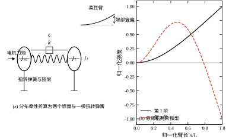
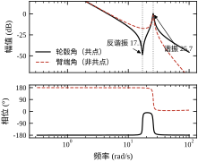
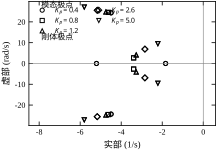
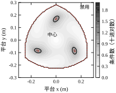
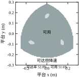
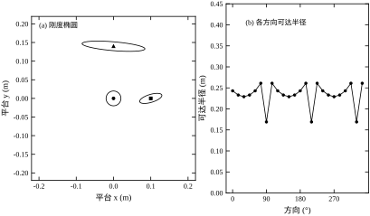
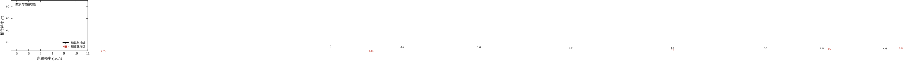
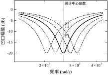
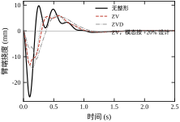
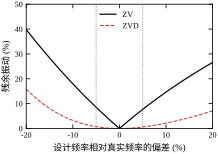

第 99 章把机械臂当成刚体：连杆不变形，关节角唯一决定末端位置，逆运动学算出的角度发下去，末端就该到位。这个假设在低速、轻载、短臂的场合够用；一旦节拍压到 1 s 以内、臂长超过 1 m、或者末端挂着 5 kg 的焊枪，刚体假设就会以最直接的方式失效——末端在停下的那一刻还在抖。本章讨论两类让刚体假设失效的机构：结构本身有分布柔性的柔性机械臂，以及靠多支链闭链传动的并联机器人。前者的问题在“弹性模态被激励”，后者的问题在“闭链约束带来奇异位形”。
第一个片段来自一台 6 轴搬运机器人。臂展 1.6 m，末端负载 4 kg，程序把节拍从 12 次/分提到 20 次/分后，放置精度从 ±0.3 mm 掉到 ±2.5 mm。示教器上的关节角曲线干净利落，没有超调；用激光位移计测末端，却在每次停止后看到一段 4 Hz 左右、峰峰值 25 mm 的衰减振荡，持续 1.2 s 才进 ±0.5 mm。把加速度限制调低，振荡幅度降到 18 mm，节拍回到 14 次/分——精度和节拍成了一个只能二选一的旋钮。
第二个片段来自一台平面 3-RRR 并联分拣机。它在工作空间中心跑得很好，重复定位 0.05 mm；把取放点往工作空间边缘挪 3 cm，末端速度突然变得“一跳一跳”，同一段直线插补，关节速度峰值涨到 4 倍以上，电机开始过流报警。机构没有坏，控制器也没有改，变的只是位形——它靠近了奇异位形，雅可比矩阵接近降秩，平台上一个很小的速度对应关节上一个很大的速度。
两个片段指向同一件事：当机构的“刚体 + 理想约束”模型不再成立时，控制器的任务从“跟踪参考”变成了“在对象的固有局限内跟踪参考”。柔性臂的局限是模态频率，并联机构的局限是条件数。本章的每个设计动作，最终都要落到这两个量上。
一根等截面悬臂梁，抗弯刚度 EI、单位长度质量 \rho A、长度 L，它的一阶弯曲模态频率是
\omega_1=3.5156\sqrt{\frac{EI}{\rho A L^4}} \tag{101-1}
系数 3.5156 来自悬臂边界条件下 \cos\beta\cosh\beta=-1 的第一个根，与材料无关，只与边界条件有关（一端固定一端自由）。式 (101-1) 里最要命的是 L^4：臂长加倍，一阶频率降到原来的 1/4。这就是为什么小型桌面臂（L=0.3 m）几乎感觉不到柔性，而大型搬运臂（L=2 m）必须认真对待——频率不是线性下降，是四次方。
本章的统一算例取 L=0.50 m、EI=2.0 N·m²、\rho A=0.60 kg/m，代入式 (101-1) 得
\omega_1=3.5156\sqrt{\frac{2.0}{0.60\times0.50^4}}=25.67\ \mathrm{rad/s}=4.09\ \mathrm{Hz} \tag{101-2}
4 Hz 是一个尴尬的数字：它比位置环的带宽（通常 2–10 rad/s，即 0.3–1.6 Hz）高，但只高一个数量级不到；它又比电流环、编码器采样（kHz 级）低得多。它恰好落在“控制器还想管、但已经管不动”的频段。如果 \omega_1 是 100 Hz，随便一个低通就能把它滤掉；如果是 0.5 Hz，它会被当成慢漂移，用积分项吃掉。4 Hz 的模态既不能忽略，也不能硬压，只能“绕开”或“主动阻尼”。
要对柔性臂做控制设计，不必解偏微分方程。工程上最常用的降阶是把一阶模态等效成两个惯量 + 一根扭转弹簧：轮毂惯量 J_m 代表电机与减速器，负载惯量 J_l 代表臂的质量分布，两者之间是等效刚度 k 与等效阻尼 c。取均质杆绕根部的转动惯量
J_l=\frac{\rho A L^3}{3}=\frac{0.60\times0.50^3}{3}=0.0250\ \mathrm{kg\cdot m^2} \tag{101-3}
再让这个两惯量系统的谐振频率等于式 (101-2)，即可反解刚度：
k=\omega_1^2\frac{J_mJ_l}{J_m+J_l} =25.67^2\times\frac{0.020\times0.025}{0.045}=7.324\ \mathrm{N\cdot m/rad} \tag{101-4}
阻尼按模态阻尼比 \zeta_1=0.02 折算，c=2\zeta_1 k/\omega_1=0.0114 N·m·s/rad。三个数（J_l、k、c）就把一根分布柔性的梁压缩成了一个四阶系统，后续所有频域结论都从它出发。
这个等效模型给出两个特征频率，它们的关系值得记住：
\omega_a=\sqrt{\frac{k}{J_l}}=17.12\ \mathrm{rad/s},\qquad \omega_r=\sqrt{k\left(\frac{1}{J_m}+\frac{1}{J_l}\right)}=25.67\ \mathrm{rad/s} \tag{101-5}
\omega_a 是反谐振（从轮毂看进去的传递函数在此处出现凹陷），\omega_r 是谐振（出现峰值）。两者的比值 \omega_a/\omega_r=\sqrt{J_m/(J_m+J_l)}=0.667 只取决于惯量比，与刚度无关。这个 0.667 是柔性臂频响图上最容易辨认的特征：凹陷与峰值之间恰好差一个“惯量比分之平方根”。看到一对这样的零极点，就该想到“轮毂轻、负载重”，而不是“传感器坏了”。

图 101-1(a) 画出折算关系：轮毂惯量、扭转弹簧与负载惯量串成一条扭转链，电机力矩从轮毂端输入，臂端挠度就是两惯量的相对转角乘臂长；(b) 是悬臂前两阶振型，一阶单调弯曲，二阶在中部出现一个节点。折算只保留一阶，等于把 (b) 里的二阶及以上全部丢掉，这一步的合法性由 §101.2.3 的模态分离度保证。
串联臂的末端误差是各关节误差的累加：六个关节各差 0.01°，末端可能差 0.1 mm。并联机构的末端由三条支链共同约束，误差在闭链中被平均掉一部分，因此同样的加工精度下刚度更高、重复定位更好——这是并联机构在分拣、手术、模拟器上不可替代的原因。
代价是闭链带来的两个新问题。其一是工作空间小且形状不规则：三条支链的行程互相牵制，可达区域往往是一个圆角三角形，本章算例在 0.6 m×0.6 m 的方形区域里可达率只有 52.5%。其二是奇异位形：当某条支链完全伸直、或者三条支链的约束方向共面时，雅可比矩阵降秩，平台在某个方向上“推不动”，反过来说，平台沿该方向的速度需要无穷大的关节速度。
定量地说，用雅可比矩阵的条件数 \kappa=\sigma_{\max}/\sigma_{\min} 衡量“离奇异有多远”。本章 3-RRR 算例在工作空间中心 \kappa=1.00（三条支链完全对称），在边缘可以超过 45。沿 +y 方向的可达半径只有 0.169 m，而沿 +x 方向有 0.243 m——同一个工作空间，不同方向的余量差 44%。这就是为什么并联机构的轨迹规划不能只在笛卡尔空间画直线，必须同时看条件数。
本章的组织沿用全书统一的 12 节结构，但两条线索交替推进：§101.2–§101.9 以柔性臂为主，把“模态—测量点—整形—凹口”这条链讲透；§101.2.6、§101.4.7、§101.6.6、§101.9.6 插入并联机构的运动学、奇异与刚度映射。两条线索共用的工具是同一个：用频域量（模态频率、穿越频率、条件数）判断“能不能控”。
开始之前先破除三个误解，它们会让后面的设计走偏：
误解一：柔性臂抖动是因为增益太高，降增益就好了。 降增益确实能减小挠度：把轮毂 PD 的比例增益从 1.2 降到 0.4，臂端挠度峰值从 25.6 mm 降到 8.9 mm。但代价立刻显现——轮毂进入 ±2% 的调节时间从 1.16 s 拖到 2.39 s，节拍掉一半。更关键的是，4 Hz 的振荡频率没变，残余振动也没有消失，只是幅度按比例缩小。降增益买的是“慢”，不是“稳”；要真正压住振动，得改变参考的形状（输入整形，§101.9）或给模态加阻尼（率反馈与凹口，§101.5）。
误解二：把编码器装在臂端就能直接控末端。 直觉上“测哪里控哪里”最直接。实测恰恰相反：用臂端角做反馈（非共点测量），同样一组增益下系统在 1 s 内发散，挠度冲到米级（早已超出线性范围，只说明“发散了”）；而用轮毂编码器（共点测量）则稳定收敛。原因在相位：在谐振频率处，共点传递函数的相位是 -91.8^\circ，非共点是 +92.3^\circ，两者几乎相差 180°。这意味着同一个率反馈对模态的作用符号相反——共点测量给出正阻尼，非共点测量给出负阻尼，等于往模态里灌能量。这条结论对所有柔性结构都成立：反馈必须取共点信号，末端误差只能靠前馈或观测器补。
误解三：并联机构只要不撞限位就安全。 奇异不是限位。限位是“走不过去”，奇异是“走得过去但速度放大无穷倍”。沿本章算例的 +y 方向，可达半径 0.169 m；在它的 85%、90%、96%、99% 处，条件数分别是 8.0、11.5、25.8、73.2。从“还能跑”到“关节过流”只有 2 cm 的过渡带，没有任何硬限位报警。工程上只能设一个条件数阈值（例如 \kappa<10）主动降速，把最后那一段可达区域让出去。
理解了这三条，后面的公式就不是“又一套推导”，而是回答同一个问题的三种语言：这个机构在哪个频段、哪个位形上还能被控制。
在设计任何控制器之前，先估一下“柔性到底有多大”，这决定要不要管它。算法只有两步：先估加速度，再估端点挠度。
要求 0.3 s 内转 30°，按梯形速度粗略取加速度 a\approx4\theta/t^2=23.3 rad/s²。两惯量总惯量 0.045 kg·m²，所需力矩约 0.045\times23.3=1.05 N·m。再看静挠度：悬臂梁端部受弯矩 M 时，端部挠度 \delta=ML^2/(2EI)，代入本章的 L=0.50、EI=2.0，得每 1 N·m 端弯矩对应 62.5 mm 挠度。
两个数一乘，最坏情况是 65 mm——臂长的 13%。实际峰值只有 25.6 mm，因为 1.05 N·m 里的大部分用来“整体加速”，真正作用在柔性环节上的只是两惯量的差动力矩；反推回去，等效端弯矩约 0.41 N·m。这个 0.41 与 1.05 的比值，就是“柔性被激励的程度”，它取决于加速度曲线有多“急”，而不是取决于增益。
这笔账的结论很直接：若任务精度是 0.1 mm，25.6 mm 是它的 256 倍，柔性不是“次要误差”，而是主导误差。反过来，挠度对臂长极敏感：同样的角加速度下，均布惯性载荷引起的端部挠度按 L^4 缩放。臂长从 0.50 m 缩到 0.15 m，挠度降到约 0.4 mm（1/120），此时才可以说“先把刚体环调好，柔性以后再说”。
本章默认读者已经掌握四样东西，没有的话按括号里的章节补：
并联机构部分只需要线性代数：矩阵乘法、奇异值分解、条件数。雅可比、奇异、刚度映射这三个概念在本章内部自洽，不依赖机器人学的其他章节；若读者做过串联臂的运动学，可以把“关节速度 = 雅可比 × 末端速度”直接搬过来，只是并联机构的雅可比不是方阵。
全章符号在表 101-1 里一次列清，后面不再重复定义。柔性臂与并联机构共用 \omega 与 J 两个字母，含义完全不同，读的时候靠上下文区分：
表 101-1 本章主要符号
| 符号 | 含义 | 单位 |
|---|---|---|
| \omega_1、\omega_2 | 一阶、二阶弯曲模态频率 | rad/s |
| \omega_a、\omega_r | 反谐振、谐振频率 | rad/s |
| \omega_c | 开环幅频首次穿过 0 dB 的频率 | rad/s |
| J_m、J_l | 轮毂惯量、负载惯量 | kg·m² |
| k、c | 等效扭转刚度、等效阻尼 | N·m/rad，N·m·s/rad |
| K_p、K_d | 比例、微分增益 | N·m/rad，N·m·s/rad |
| \zeta、\zeta_z、\zeta_p | 模态阻尼比、凹口零点与极点阻尼比 | — |
| J | 并联机构的雅可比（与惯量无关） | rad/m |
| \kappa | 条件数 \sigma_{\max}/\sigma_{\min} | — |
两处容易混的地方提前说明。第一，J 在柔性臂里是惯量、在并联机构里是雅可比，本章一律用下标或上下文区分，不会出现“惯量雅可比”这种混合量。第二，角度的单位：公式推导全部用 rad，只有图注与现场记录用度；30^\circ 阶跃在代码里写作 np.deg2rad(30.0)，一旦把度直接代进 K_p e，力矩会放大 57 倍，这是现场调试最经典的一次“炸机”。
把图 101-1 左图的两惯量系统写成牛顿—欧拉方程。轮毂受电机力矩 \tau，轮毂与负载之间靠扭转弹簧传递力矩：
J_m\dot{\omega}_m=\tau-k(\theta_m-\theta_l)-c(\omega_m-\omega_l),\qquad J_l\dot{\omega}_l=k(\theta_m-\theta_l)+c(\omega_m-\omega_l) \tag{101-6}
式 (101-6) 只有两个自由度，但已经保留了柔性臂最关键的性质：电机端看到的惯量随频率变化。低频时两惯量一起转，看到的是 J_m+J_l；高频时弹簧来不及传力，电机只看到自己的 J_m。两个极限之间，就是反谐振与谐振。
把式 (101-6) 拉氏变换、消去 \theta_l，得到从力矩到轮毂角的传递函数
\frac{\theta_m(s)}{\tau(s)} =\frac{J_ls^2+cs+k}{s^2\left[J_mJ_ls^2+c(J_m+J_l)s+k(J_m+J_l)\right]} \tag{101-7}
以及从力矩到臂端角的传递函数
\frac{\theta_l(s)}{\tau(s)} =\frac{cs+k}{s^2\left[J_mJ_ls^2+c(J_m+J_l)s+k(J_m+J_l)\right]} \tag{101-8}
两式的分母完全相同（同一个四阶系统），差别全在分子：轮毂角有 J_ls^2+cs+k 这样一对复零点，臂端角只有一个实零点 -k/c。这一对复零点就是反谐振的来源——在 \omega_a=17.12 rad/s 处，分子趋近于零，轮毂角的幅值出现深谷；而臂端角的分子在该频率附近不为零，所以没有谷。
图 101-2 把两条幅频曲线画在一起：轮毂角在 17.1 rad/s 掉到 -48 dB 附近，随即在 25.7 rad/s 冲回 +0.5 dB；臂端角则没有这个谷，一路按 -40 dB/dec 下降，只在 25.7 rad/s 附近鼓起一个 -1.5 dB 的平缓包。同一个对象的两个输出，一个带谷、一个不带谷，闭环特性可以完全不同——这正是 §101.6 要展开的“共点与非共点”。
反谐振频率的物理含义是：在这个频率上，轮毂几乎不动，能量全部被柔性环节吸收。想象一只手握住一根弹簧的一端，另一端挂一个质量块：当手的激励频率等于质量块在弹簧上的固有频率 \sqrt{k/J_l} 时，手的位移趋于零（质量块的反作用恰好抵消了外力）。式 (101-5) 的 \omega_a=\sqrt{k/J_l} 就是 mass-on-spring 的固有频率，它只取决于负载惯量与刚度，与轮毂惯量无关。
谐振频率 \omega_r=\sqrt{k(1/J_m+1/J_l)} 则是“两端都被约束”时的频率，两个惯量相对振动、质心不动。两者之比
\frac{\omega_a}{\omega_r}=\sqrt{\frac{J_m}{J_m+J_l}} \tag{101-9}
只由惯量比决定。本章算例 J_m=0.020、J_l=0.025，比值 0.667。工程上这个数很有用：只要在频响图上量出谷与峰的位置，就能反推惯量比；反过来，知道惯量比就能预判谷应该出现在峰的哪个位置，从而判断测到的是不是真实模态而不是噪声。
严格地说，悬臂梁有无限阶模态，频率按 1.875^2:4.694^2:7.855^2:\cdots 的比例升高，即 \omega_2/\omega_1=6.27、\omega_3/\omega_1=17.5。本章 \omega_1=25.67 rad/s，则 \omega_2=161 rad/s、\omega_3=449 rad/s。
截断的判据不是“阶数够不够”，而是“高阶模态是否落在控制带宽之外”。轮毂 PD 的穿越频率实测 6.94 rad/s，\omega_2 是它的 23 倍，其模态增益按 1/\omega^2 衰减后只剩约 0.2%，忽略它是安全的。如果换成轻质长臂（\omega_1 只有 8 rad/s），\omega_2 落到 50 rad/s，与穿越频率只差 7 倍，此时二阶模态必须保留，否则相位裕度的预测会偏乐观 10° 以上。
在式 (101-7) 与式 (101-8) 中令 s=j\omega_r，本章数值代入得：轮毂角相位 -91.8^\circ、幅值 1.054；臂端角相位 +92.3^\circ、幅值 0.843。两者相位几乎相反。
这不是巧合。在谐振频率上，轮毂与负载的相对位移达到最大：轮毂向前转、负载因为惯性落在后面。于是“力矩增大”时轮毂角加速前进，臂端角反而相对滞后——从传递函数看，就是一个取正、一个取负。率反馈的阻尼项是 -K_d\omega，它对模态做功的功率正比于 \omega\cdot\tau_{\text{modal}}；符号一翻，阻尼就变成负阻尼。
这正是 §101.1.5 误解二的数学解释。工程结论只有一条：反馈信号必须与力矩作用点共点（编码器装在电机侧、力传感器装在关节处）；末端误差要靠视觉/加速度计做前馈或状态估计，不能直接进反馈回路。

图 101-2 的上下两幅共用横轴。上图在 17.1 rad/s 处出现深谷、25.7 rad/s 处出现尖峰，这是轮毂角独有的；臂端角没有谷，只在谐振处鼓起一个平缓的包。下图更能说明问题：两条相位曲线在谐振处几乎反号，一个 -91.8^\circ、一个 +92.3^\circ。把这张图与惯量比 0.667 对照，可以确认折算没有出错——谷峰间距是该比值的直接读数。
轮毂 PD 的控制律为 \tau=K_p(\theta_{ref}-\theta_m)-K_d\omega_m，代入式 (101-7) 得闭环特征方程
J_mJ_ls^4+\left[c(J_m+J_l)+K_dJ_l\right]s^3 +\left[k(J_m+J_l)+K_pJ_l+K_dc\right]s^2 +\left(K_pc+K_dk\right)s+K_pk=0 \tag{101-10}
四项系数分别被 K_d、K_p 改写，但两者改的不是同一件事： - K_p 主要进 s^2 与 s 项，等效于并联一个刚度，抬高刚体带宽与模态频率。K_p 从 0.4 增到 2.6，模态频率从 24.35 升到 25.58 rad/s，但模态阻尼比只从 0.181 变到 0.198——几乎不动； - K_d 进 s^3 与 s^2 项，等效于并联一个阻尼，是模态阻尼的主要来源。K_d 从 0.05 增到 0.60，模态阻尼比从 0.048 升到 0.302，同时相位裕度从 12.0° 升到 79.4°，穿越频率从 5.09 升到 10.32 rad/s。
用本章参数、K_p=1.2、K_d=0.30 代入式 (101-10)，四个根为 -3.27\pm j4.12（刚体主导，\zeta=0.62）与 -4.75\pm j24.78（模态主导）。模态阻尼比
\zeta_{\text{modal}}=\frac{4.75}{\sqrt{4.75^2+24.78^2}}=0.188 \tag{101-11}
开环只有 0.02，闭环升到 0.188，接近 10 倍。这条结论与“共点率反馈是耗散的”一致：反馈力矩与轮毂速率同向抑制运动，必然从模态中抽走能量。所以 §101.1.5 误解一里“降增益”之所以不能解决问题，不是因为它没给阻尼，而是因为它同时把刚体带宽降下来：K_d 从 0.30 降到 0.05，模态阻尼掉回 0.048，挠度虽然因为动作变慢而减小，但一旦有外界扰动（比如换刀冲击），振动会持续更久。真正的调参自由度是 K_d，不是 K_p，而 K_d 的上限由编码器噪声与微分放大决定（见 §101.5.4）。
平面 3-RRR 由三条支链组成，每条支链是“基座铰 B_i — 主动杆 l_1 — 肘关节 — 从动杆 l_2 — 平台铰 P_i”。平台姿态锁定时只有两个平移自由度，三条支链提供三个约束，其中一个是冗余约束。第 i 条支链的几何约束为
\left\|P_i-B_i-l_1\begin{bmatrix}\cos\theta_i\\ \sin\theta_i\end{bmatrix}\right\|=l_2, \qquad i=1,2,3 \tag{101-12}
对式 (101-12) 求全微分并整理，得到关节角速度与平台速度的线性关系
\dot{\boldsymbol\theta}=J(\boldsymbol q)\,\dot{\boldsymbol x},\qquad J\in\mathbb R^{3\times2} \tag{101-13}
J 不是方阵，因为三条支链驱动两个自由度，存在一个冗余约束。式 (101-13) 是并联机构控制的全部运动学基础：位置环算出的平台速度指令乘以 J 就是关节速度指令，除以 J 就是平台受力与关节力矩的映射。
对 J 做奇异值分解 J=U\Sigma V^{\mathsf T}，两个方向的放大倍数就是两个奇异值 \sigma_1\ge\sigma_2。定义条件数
\kappa=\frac{\sigma_{\max}}{\sigma_{\min}} \tag{101-14}
它同时控制两件事：速度放大（平台速度 \|\dot{\boldsymbol x}\| 对应关节速度上界 \sigma_{\max}\|\dot{\boldsymbol x}\|）与力传递（关节力矩 \|\boldsymbol\tau\| 对应平台等效力下界 \sigma_{\min}\|\boldsymbol\tau\|）。\kappa 越大，同一个平台动作需要的关节速度越大、能施加的等效力越小，两个方向同时恶化。
本章算例：中心处 \sigma_1=\sigma_2=7.959，\kappa=1.00；在 (0,0.14) 处 \sigma_1=33.84、\sigma_2=4.76，\kappa=7.11。也就是说，同样的平台速度，靠边缘时关节速度要快 4.25 倍，而可施加的等效力只剩 60%。这就是并联机构“工作空间边缘不能用”的定量含义，也是 §101.10 标定与限速策略的依据。
并联机构的奇异分三类，处理方式完全不同： 1. 逆解奇异（\det J\to\infty）：某条支链完全伸直，平台沿该支链方向无法再动。表现为条件数趋于无穷，关节速度指令爆掉。工程上靠工作空间收缩 + 条件数限速规避。 2. 正解奇异（\det J\to0）：支链的约束方向线性相关，平台获得一个不受约束的瞬时自由度，即使锁住电机平台也能动。这类奇异最危险，因为它不体现在“关节点不动”，而体现在“平台自己漂”。 3. 组合奇异：正解与逆解奇异同时出现，通常发生在机构设计的对称位形上，只能靠结构设计避开。
本章 3-RRR 只出现第一类，因为它姿态锁定、结构对称。六自由度的 Stewart 平台三类都会遇到，第 102 章讨论传感器与执行器时会再提到它。
式 (101-6) 也可以写成状态空间。取状态 \boldsymbol x=[\theta_m,\ \omega_m,\ \theta_l,\ \omega_l]^{\mathsf T}，输入为电机力矩 \tau：
\dot{\boldsymbol x}= \begin{bmatrix} 0 & 1 & 0 & 0\\ -k/J_m & -c/J_m & k/J_m & c/J_m\\ 0 & 0 & 0 & 1\\ k/J_l & c/J_l & -k/J_l & -c/J_l \end{bmatrix}\boldsymbol x+ \begin{bmatrix}0\\1/J_m\\0\\0\end{bmatrix}\tau \tag{101-15}
输出按需要取：轮毂角是 [1,0,0,0]\boldsymbol x，臂端角是 [0,0,1,0]\boldsymbol x，挠度是 [0,0,1,0]-[1,0,0,0]。同一个状态方程、三个输出，就是“共点/非共点/挠度”三种测量的统一来源。
开环特征值可以手算：一个在原点（刚体自由转动），一个在 -c(J_m+J_l)/(J_mJ_l)=-1.03 rad/s（两惯量相对运动的阻尼极点），一对共轭复根 -0.513\pm j25.66（一阶模态）。本章的 K_d 反馈本质上是在移动那对复根的实部：从 -0.513 推到 -4.75，阻尼比从 0.02 推到 0.188。
状态空间形式的价值不在计算，而在接口：第 54 章的极点配置、第 56 章的卡尔曼滤波、第 57 章的 H_\infty 都要求 (A,B,C) 形式。把式 (101-15) 直接交给这些工具，就能在本章的两惯量对象上做“观测器加阻尼”的对比实验，不必重推模型。
只留一阶模态，误差有多大？可以用静挠度的模态展开估。均布载荷下，各阶模态对端部挠度的贡献按 1/\omega_i^2 衰减，二阶与一阶的频率比是 6.27，贡献比约 1/6.27^2=2.5\%。本章的单模态模型在静挠度上误差约 2.5%，在动态峰值上误差更大一些（高阶模态被激励的相位不同），但仍在一阶主导的量级内。
判据可以写成“二阶频率是否低于 4\omega_1”：低于 4 倍时，二阶贡献超过 6%，单模态模型开始明显低估振动；低于 2 倍时，两阶模态耦合，必须用两模态或直接做有限元。本章 6.27 倍的比值属于“单模态够用”的一档，这也是选 0.5 m 等截面铝臂做算例的原因——它的模态分离度好，适合讲清楚一阶的故事。
反过来，如果臂上挂了集中质量，二阶频率会显著下降（集中质量对高阶模态影响更大），比值可能掉到 3 倍以内。此时整形器要按两模态设计，脉冲数从 2 增到 4（ZV 串两阶）或直接用多模态整形，时长翻倍——这就是 §101.11.2 把“只保留一阶”列为第一条局限的原因。
前面十个式子里的 \zeta 一直是“给定”的，但它是本章所有参数中最不确定的一个。原因很简单：刚度与惯量由几何和材料决定，可以算准到 5%；阻尼由接头摩擦、材料内耗、线缆与空气的耦合决定，同一根臂拆装一次就能变一倍。
工程上量阻尼比用对数衰减率。记相邻两个同向峰值的比为 r，则
\zeta=\frac{\delta}{\sqrt{4\pi^2+\delta^2}},\qquad \delta=\ln r \tag{101-28}
\zeta=0.02 对应 \delta=0.126、r=1.134，即每个周期峰值衰减 11.8%；\zeta=0.10 对应 r=1.87，一个周期就掉一半。阻尼小的时候，r 对 \zeta 极其敏感：r 的读数从 1.134 变到 1.28（相对误差 13%），\zeta 就从 0.02 变到 0.04，翻了一倍。所以“阻尼比测到两位小数”没有意义，量级对就够了。
这个不确定性对本设计的影响可以看三处：
结论：阻尼比只需量级正确，宁可估大不估小。本章取 0.02 是偏低的值，属于偏保守的选择——实际系统阻尼更大时残余会比仿真更小。这条与刚度参数的处理正好相反：刚度要测得准（凹口对它有 20 dB 的敏感度），阻尼有个数就行。
柔性臂与并联机构的设计可以并到同一条流程上，因为两者都归结为“先算对象的固有量，再决定控制器能碰哪里”：
顺序不能颠倒。常见错误是先调增益、发现抖了再加凹口、凹口带来相位滞后又回头降增益，绕一圈回到原点。先把模态频率测准，后面每一步都有依据。
式 (101-1) 只适用于等截面、均质、根部完全固定的理想悬臂。实际臂有三个偏差源：根部有减速器柔性与轴承间隙、臂内有走线孔与加强筋、末端有负载质量。三者都让实测频率低于计算值，典型低 10%–30%。
本章算例的解析值是 25.67 rad/s，如果实测只有 20 rad/s（低 22%），会带来两个后果： - 按 25.67 设计的凹口中心偏了 22%，凹口深度从 -20 dB 掉到约 -4 dB，几乎失效； - 按 25.67 算的反谐振 17.12 rad/s 实际在 13.3 rad/s，频响图上的“谷”与预期对不上，会误判为传感器故障。
所以第一步的产出不是“一个公式结果”，而是“一个实测值 + 一个不确定度”。工程上要求实测频率的不确定度小于 5%，否则后续整形器的鲁棒性无从谈起（§101.9.3 会给频率失配的定量后果）。
折叠只需要三个数：J_l 由式 (101-3) 给出；k 由式 (101-4) 反解；c 由模态阻尼比折算。要注意 J_l 取的是“绕根部的转动惯量”，如果末端挂了集中质量 m_t，应改为 J_l=\rho AL^3/3+m_tL^2。本章算例不带末端质量，J_l=0.025 kg·m²。
选点的判据是共点性，但工程上还要看信噪比。轮毂编码器信噪比高、共点性好，但对末端误差“看不见”；臂端视觉共点性差，却能直接测到末端。可行的组合只有一种：轮毂编码器做反馈，臂端视觉做慢速外环修正或前馈。两者的带宽差一个数量级（编码器 1 kHz，视觉 30 Hz），刚好符合串级原则（第 45 章）。反过来把视觉直接接进力矩环，就是 §101.1.5 误解二的结果。
柔性臂的增益选择有两个指标：相位裕度（决定鲁棒性）与模态阻尼比（决定振动衰减快慢）。两者都随 K_d 增大而改善，但 K_d 受噪声限制；K_p 只改善带宽，对模态阻尼几乎无影响。
固定 K_d=0.30 扫 K_p 的结果见表 101-2。K_p 从 0.4 增到 5.0，穿越频率从 6.27 升到 10.03 rad/s，相位裕度从 78.1° 降到 31.3°，挠度峰值从 8.9 mm 涨到 89.0 mm。没有一个 K_p 能同时让“快”和“不抖”都满意，这就是柔性臂设计的第一条权衡。
表 101-2 轮毂 PD 的 K_p 扫描（K_d=0.30，30° 阶跃）
| K_p (N·m/rad) | 穿越频率 (rad/s) | 相位裕度 (°) | 挠度峰值 (mm) | 轮毂调节时间 (s) |
|---|---|---|---|---|
| 0.4 | 6.27 | 78.1 | 8.9 | 2.39 |
| 0.8 | 6.57 | 68.0 | 17.5 | 0.86 |
| 1.2 | 6.94 | 60.1 | 25.6 | 1.16 |
| 2.6 | 8.26 | 43.8 | 51.6 | 1.14 |
| 5.0 | 10.03 | 31.3 | 89.0 | — |
表中“挠度峰值”与“调节时间”并不同向：K_p=0.8 的挠度是 1.2 的 68%，调节时间却更短（0.86 s 对 1.16 s）。原因是 K_p=0.4 时刚体极点处于临界阻尼（两个实根 -1.84），响应虽无超调但很慢；K_p=0.8 时刚体极点转为复根，反而“先冲到位、再小幅回调”。只看超调量会选错 K_p，必须同时看调节时间。
图 101-3 把五组 K_p 的闭环极点画在一起，可以看清这件事的根：刚体极点从实轴上的 -1.84、-5.21 一路走到 -2.21\pm j9.50，模态极点却只在 -4.5\pm j24.4 到 -5.8\pm j27.1 之间小幅移动。K_p 主要改的是刚体动态，对模态极点只有二阶影响——这既是“K_p 换带宽”的来源，也是 §101.6.4 说“k 失配不敏感”的另一面。
固定 K_p=1.2 扫 K_d 的结果见表 101-3。K_d 从 0.05 增到 0.90，相位裕度从 12.0° 升到 84.8°，模态阻尼比从 0.048 升到 0.25，但模态频率同时从 25.9 掉到 18.0 rad/s——阻尼是用频率换来的。看起来“越大越好”，但 K_d 放大编码器噪声：若微分用 10 ms 一阶滤波，一个编码器计数（3\times10^{-4} rad）会被当成 0.03 rad/s 的速度跳变，K_d=0.90 时折算成 27 mN·m 的力矩尖峰；分辨率只有 10^{-3} rad 时尖峰到 90 mN·m，相当于 30° 阶跃初始力矩（0.63 N·m）的 14%。所以 K_d 的上限由“噪声折算力矩小于阶跃力矩的 5%”反推，不是凭相位裕度定的。
表 101-3 K_d 扫描（K_p=1.2）
| K_d (N·m·s/rad) | 穿越频率 (rad/s) | 相位裕度 (°) | 模态阻尼比 |
|---|---|---|---|
| 0.05 | 5.09 | 12.0 | 0.048 |
| 0.15 | 5.52 | 34.6 | 0.105 |
| 0.30 | 6.94 | 60.1 | 0.188 |
| 0.45 | 8.74 | 73.2 | 0.262 |
| 0.60 | 10.32 | 79.4 | 0.302 |

图 101-3 里五组极点分成上下两簇：下簇是刚体极点，随 K_p 增大沿圆弧走向虚轴；上簇是模态极点，五组几乎重叠，只在虚轴方向上小幅上移。两簇的纵向距离就是“控制带宽”与“模态频率”的分离度，本章为 25.67 对 6.94，约 3.7 倍。分离度越大，设计越从容；一旦这个倍数掉到 2 以下，PD 的超前相位就会开始侵入模态频段，§101.2.3 的截断假设也随之失效。
并联机构的设计顺序与串联臂相反：先定工作空间，再定轨迹。步骤是：把平台姿态固定在工作姿态，用逆解在候选区域上打网格，逐点算条件数，画出等值线图（图 101-4 就是本章算例的结果）；然后把 \kappa<10 的区域作为“可用工作空间”，\kappa 在 10–30 之间作为“降速区”，\kappa>30 直接禁用。
本章算例的结果是：0.6 m×0.6 m 方形区域内可达率 52.5%，其中 \kappa<10 的占 51.2%——几乎全部可达区域都能用，因为本章机构的尺寸比（l_1=l_2=0.20 m，基座半径 0.25 m）比较“舒展”。如果换成短连杆、大平台的构型，\kappa<10 的占比会掉到 30% 以下，工作空间会被奇异“咬掉”一大块。图 101-5 把“几何可达”与“\kappa<10 可用”两个区域叠在一起：前者是三条支链都能装上的集合，后者是精度还能接受的子集，两层的差就是“够得着但不好用”的降速区。

图 101-4 的灰阶是条件数的十进对数，黑色实线与红色虚线分别是 \kappa=10 与 \kappa=30 的边界。中心区几乎全白（\kappa\approx1.00），越靠外越暗；沿三条支链方向伸出的暗带就是“某条支链接近伸直”的方向。这类图必须在设计阶段画一次，它决定的不只是控制参数，还包括工件的摆放姿态。

图 101-5 把两层叠起来：浅灰是逆解有解的集合，深灰是其中 \kappa<10 的子集。两层几乎重合，说明本章的尺寸比没有把工作空间“咬”掉；若深灰明显缩在浅灰内部，问题在连杆长度与基座半径的搭配，调控制器救不回来（§101.3.7 第三条）。
把上述五步的结果汇总成表 101-4，就是交付给控制工程师的设计输入。这张表里没有一行是“调出来的”，全部由几何、材料与指标算出；调参只发生在最后一行（K_p、K_d 的最终取值），且必须在表的约束内。
表 101-4 柔性臂设计记录（本章算例）
| 项 | 符号 | 取值 | 来源 |
|---|---|---|---|
| 臂长 / 抗弯刚度 / 线密度 | L / EI / \rho A | 0.50 m / 2.0 N·m² / 0.60 kg/m | 结构设计 |
| 一阶模态 | \omega_1 | 25.67 rad/s（4.09 Hz） | 式 (101-1) |
| 负载惯量 | J_l | 0.025 kg·m² | 式 (101-3) |
| 等效刚度 / 阻尼 | k / c | 7.324 N·m/rad / 0.0114 N·m·s/rad | 式 (101-4) |
| 反谐振 | \omega_a | 17.12 rad/s | 式 (101-5) |
| 反馈量 | — | 轮毂角 + 轮毂角速率 | 共点原则 |
| 比例 / 微分增益 | K_p / K_d | 1.2 N·m/rad / 0.30 N·m·s/rad | 表 101-2、表 101-3 |
| 相位裕度 / 穿越频率 | PM / \omega_c | 60.1° / 6.94 rad/s | 频域核算 |
| 模态阻尼比（闭环） | \zeta | 0.188 | 式 (101-10) 求根 |
设计记录做完不等于可以上机。三类情况必须回到第一步重算：
这三条的共同点是：它们都要求改“对象”，而不是改“参数”。柔性臂与并联机构的调试之所以难，就在于很多人把它们当成“参数没调好”，而实际上问题在机构或测量方案上。
六步不是并列的清单，而是一条有向链。把依赖画出来，就知道为什么“跳步”一定会返工：
| 步骤 | 依赖谁 | 输出给谁 | 漏掉它的后果 |
|---|---|---|---|
| 1 算模态 | 几何、材料 | 2、4、6 | 凹口与整形器全部失谐 |
| 2 折模型 | 1 | 4 | 增益没有依据，只能盲试 |
| 3 定测量 | 机构布局 | 4、6 | 阻尼项变负，越调越抖 |
| 4 配增益 | 2、3 | 6 | 凹口按错误的闭环频率设计 |
| 5 划工作空间 | 机构尺寸 | 轨迹规划 | 边缘位姿精度骤降 |
| 6 加整形/凹口 | 1、4 | 验收 | 用整形器掩盖反馈缺陷 |
依赖关系里最容易被忽视的是“4 → 6”。整形器与凹口的设计频率应该取闭环模态频率，而不是开环的 25.67 rad/s。本章 K_d=0.30 时闭环模态极点在 -4.75\pm j24.78，对应的阻尼自然频率 25.23 rad/s，比开环低 1.7%。1.7% 的偏差按表 101-9 只损失 1 dB 左右，可以不管；但若 K_d 加到 0.90，闭环模态频率掉到 18.0 rad/s，偏差 30%，此时仍按 25.67 设计整形器，残余会直接冲到 40% 以上。高频阻尼是用“整形器失配”换来的，这一点在设计阶段就该算进去。
另一条容易忽视的依赖是“1 → 5”之外的“3 → 2”。折叠时用到的 J_l 取决于末端是否挂负载，而“测量点选在哪里”决定了这个负载是否可测。若编码器装在轮毂、负载每次不同，J_l 就是一个 3 倍的变化范围，第 2 步的输出（k、c）随之变成区间而非定值。设计记录里应该写“J_l=0.025 kg·m²（空载）到 0.075（满载）”，而不是一个数，否则第 6 步的整形器会按空载设计、在满载时失谐。
把 K_p=1.2、K_d=0.30 的 PD 与式 (101-7) 串起来，得到轮毂开环 L(s)。它的幅频曲线可以分成三段：
两个特征点就是 §101.1.3 的 \omega_a=17.12 与 \omega_r=25.67。它们不是“扰动”，而是回路的固有形状；任何在这个频段有能量的参考或扰动，都会被放大 8 倍以上（18.3 dB），这是柔性臂上“越急越抖”的频域解释。
首次穿越（幅值从上方穿过 0 dB）发生在 \omega_c=6.94 rad/s，此处相位 -119.9^\circ，相位裕度 60.1^\circ。三个数之间的关系值得核对一遍：双积分给 -180^\circ，PD 在 6.94 rad/s 处给 \arctan(K_d\omega_c/K_p)=\arctan(0.30\times6.94/1.2)=60.1^\circ，柔性环节在此频率的附加相位约 0^\circ（远低于反谐振）。所以
\mathrm{PM}\approx\arctan\frac{K_d\omega_c}{K_p}=60.1^\circ \tag{101-16}
与实测完全一致。这个巧合不是运气：\omega_c 远低于 \omega_a 时，柔性环节对相位几乎无贡献，回路退化成“双积分 + PD”，而双积分 + PD 的相位裕度恰好等于 PD 的相位超前量。只要 \omega_c<\omega_a/2，就可以用式 (101-16) 估算 PM，误差在 5° 以内。
幅值在 25.69 rad/s 处重新抬到 +18.3 dB，也就是再次穿过 0 dB（上升段在 22.7 rad/s，回落段在 31.5 rad/s）。这种“穿越后又回来”的回路叫条件稳定系统：增益太小或太大都可能不稳定，只有中间一段增益安全。
本章的 K_p=1.2 落在安全区，原因要看到相位：回落段的那次穿越发生在 31.5 rad/s，该处相位 -92.9^\circ，离 -180^\circ 还有 87° 余量，Nyquist 曲线没有包围 -1 点。随着 K_p 增大，谐振峰从 18.2 dB 抬到 19.7 dB，回落段穿越的频率右移，相位随之变得更负；当 K_p 大到让该处相位接近 -180^\circ 时，系统就会从“条件稳定”翻到“不稳定”。本章扫描到 K_p=5.0 时仍未翻，但挠度已达 89 mm，实际早就不能用了——稳定性边界远在可用性边界之外，这是柔性臂的典型特征。
表 101-2 的每一组增益下，增益裕度都记为 \infty，因为相位曲线在 -180^\circ 处没有穿越：双积分给 -180^\circ，PD 给正超前，柔性环节在 \omega_a 附近又给一段正相位（反谐振的零点对），相位始终在 -180^\circ 之上。相位不穿越 -180^\circ 的回路，增益裕度按定义为无穷大。
这不代表“增益可以随便加”。增益裕度只回答“增益放大多少倍会让相位穿越点的幅值到 0 dB”，不回答“谐振峰会不会把系统推到条件稳定区”。对柔性臂，后者才是真正的约束。工程上应把“穿越后峰值”当作第二个性裕度指标：本章 K_p=1.2 时是 18.3 dB，低于 20 dB 才算有余量；K_p=5.0 时 19.7 dB，已经贴线。
凹口的目的是把谐振峰压下去，让“穿越后峰值”从 18.3 dB 降到 0 dB 以下。标准二阶凹口为
N(s)=\frac{s^2+2\zeta_z\omega_rs+\omega_r^2}{s^2+2\zeta_p\omega_rs+\omega_r^2}, \qquad \zeta_z<\zeta_p \tag{101-17}
中心频率取 \omega_r=25.67 rad/s，深度由 \zeta_z/\zeta_p 决定：本章取 \zeta_z=0.05、\zeta_p=0.50，深度 20\lg(0.05/0.50)=-20 dB，刚好把 +18.3 dB 的峰压到 -1.7 dB，实测压到 -0.7 dB。宽度由 \zeta_p 决定，\zeta_p 越大陷波越宽、对频率误差越宽容，但相位滞后也越大。
代价在相位上：凹口在 \omega_c=6.94 rad/s 处贡献约 -14.8^\circ，相位裕度从 60.1° 掉到 45.3°。这就是凹口的本质——拿低频段的相位换高频段的幅值。如果 K_d 本来就把 PM 做到了 79.4°（K_d=0.60），加凹口后仍有 60° 以上，这笔交易划算；如果 PM 只有 45°，加凹口会把系统推到不稳定边缘。
式 (101-13) 给的是速度关系。把关节力矩 \boldsymbol\tau 映射到平台等效力 \boldsymbol F，用虚功原理：
\boldsymbol F=J^{\mathsf T}\boldsymbol\tau \tag{101-18}
再假设关节有刚度 k_\theta（减速器 + 连杆弹性），平台刚度矩阵就是
K_x=J^{\mathsf T}k_\theta J \tag{101-19}
式 (101-19) 的 eigenvalues 是 k_\theta\sigma_i^2，所以刚度各向异性等于条件数的平方：\kappa=7.11 时，一个方向刚 50 倍于另一个方向。取 k_\theta=10^4 N·m/rad，中心处两个方向都是 6.3\times10^5 N/m；在 (0,0.14) 处变成 1.15\times10^7 与 2.3\times10^5 N/m。加工时如果刀具受力方向恰好落在“软”的那一边，让刀量会比中心处大一个量级——这就是并联机床必须做刚度标定的原因。图 101-6 把这两个位置的刚度椭圆画在同一尺度下：中心的椭圆接近圆，(0,0.14) 处被拉成细长条，长轴方向就是“硬”方向，短轴方向与之垂直、正是接近奇异的方向。

图 101-6(a) 把中心、(0.10,0)、(0,0.14) 三处的刚度椭圆画在同一尺度下：中心的椭圆接近圆（\kappa=1.00），越靠近边缘越扁，(b) 给出的可达半径也印证了方向性——+x 方向 0.243 m，+y 方向只有 0.169 m。椭圆的短轴永远指向“再走一步就奇异”的方向，这一点比条件数的数值更直观，也更适合拿给结构工程师看。
表 101-5 把常见的三种并联构型放在一起。选择哪一种，取决于任务更需要“工作空间”还是“刚度/速度”。
表 101-5 三种并联构型的对比
| 项 | 3-RRR（平面） | Delta（空间三平移） | Stewart（六自由度） |
|---|---|---|---|
| 自由度 | 3（2 平移 + 1 转） | 3 平移 | 6 |
| 工作空间 | 大，圆角三角 | 中等，倒锥形 | 小，扁球 |
| 刚度 | 中 | 高（杆只受拉压） | 很高 |
| 速度 | 中 | 很高（可达 10 m/s） | 低 |
| 主要奇异 | 支链伸直 | 支链共面 | 三类齐全 |
| 典型用途 | 分拣、定位 | 食品/药品高速抓取 | 模拟器、手术、精密对准 |
Delta 之所以快，是因为它的从动杆只受拉压、不受弯，运动部件质量可以做到很小；Stewart 之所以刚，是因为六条腿的约束方向在空间上分散，\sigma_{\min} 大。3-RRR 处在中间：平面内灵活、刚度一般，适合中小负载的平面定位。
本章的连续设计基于两个假设：采样足够快、延迟足够小。若采样周期 T_s 满足 \omega_rT_s<0.1（即 T_s<3.9 ms），连续结论的误差在 5% 以内；若延迟 T_d 满足 \omega_cT_d<0.05 rad（即 T_d<7.2 ms），相位裕度的预测误差小于 3°。这两个条件在本章算例（1 kHz 采样、2 ms 延迟）下都满足，所以 §101.4 的结论可以直接用。
一旦超出，就必须进 §101.5：采样与延迟对柔性臂的影响比对刚体臂更大，因为柔性臂的穿越频率离模态频率本来就近，任何附加相位都会直接吃掉模态阻尼。
设计评审时经常遇到“图在这里，数是别人算的”。能不能当场从图上读出关键量，决定了评审是自己判断还是听汇报。四个数的读法如下，顺序不能换：
四个数之间有三个恒等式可以自检，任何一条对不上，说明读错了点：
第三个恒等式值得逐项对一遍账，因为评审时最容易被它误导。二阶系统的谐振峰高 M_r=1/(2\zeta\sqrt{1-\zeta^2})，\zeta=0.02 时是 25.0，即 28.0 dB——但这是相对刚性渐近线的倍数，不是绝对幅值。把 18.3 dB 拆成四项：
四项相加 -29.4+28.0+1.9+17.8=18.3 dB，与实测的 18.3 dB 完全吻合。四项缺一项都对不上，这也说明“峰高由阻尼决定”只在第二项上成立：\zeta 加倍，峰值只降 6 dB；而把 K_p 加倍，峰值反而涨 6 dB（K_d/K_p 不变时 PD 增益随 K_p 线性涨）。所以看到峰高变化，先别急着怀疑阻尼，多半是增益动了。
手读的精度大约 5%，够用来判断“这个设计合不合理”，不够用来填设计记录。设计记录里的数必须来自脚本，因为 5% 的误差在凹口上就是 3 dB 的深度差。
连续设计假设“控制器瞬时响应”，实际数字控制器引入三个偏差：零阶保持的相位滞后 -\omega T_s/2、计算与传输延迟 T_d、以及传感器与 PWM 的量化。三者对本章算例的量级是：
三者加起来不到 1°，连续设计的结论在 1 kHz 下几乎不用修正。这与多旋翼姿态环（\omega_c=40 rad/s）完全不同——那里 1 ms 采样就要付 1.1° 的相位。低带宽是柔性臂的“补偿优势”：它慢，所以离散化不敏感。
虽然回路对采样不敏感，但模态本身对采样有硬要求。整形器与凹口都工作在 \omega_r=25.67 rad/s，若 \omega_rT_s 太大，离散化会让它们的中心频率与深度都偏。工程判据取
\omega_rT_s<0.1\quad\Longrightarrow\quad T_s<\frac{0.1}{25.67}=3.9\ \mathrm{ms} \tag{101-20}
本章取 1 ms，\omega_rT_s=0.026，留了 4 倍余量。若受限于总线周期只能做到 5 ms，凹口深度会从 -20 dB 掉到约 -14 dB，整形器的残余振动从 0.5% 升到 2% 以上（§101.5.6）。
把 K_p=1.2、K_d=0.30 的回路按 ZOH 离散，逐个采样周期算离散开环的相位裕度，结果见表 101-6。
表 101-6 采样周期对相位裕度的影响（连续值 60.1°）
| T_s (ms) | 0.5 | 1 | 2 | 4 | 8 | 16 |
|---|---|---|---|---|---|---|
| 相位裕度 (°) | 60.0 | 59.9 | 59.7 | 59.3 | 58.5 | 57.0 |
| 相对损失 (°) | 0.1 | 0.2 | 0.4 | 0.8 | 1.6 | 3.1 |
损失几乎与 T_s 成正比，斜率约 0.19^\circ/ms，与 180\omega_cT_s/\pi 的估算（0.40^\circ/ms）同量级但偏小一半——因为 ZOH 的相位滞后在高频段被 PD 的微分部分部分抵消。这张表说明：对柔性臂，把采样从 1 ms 降到 4 ms 不是灾难；真正的灾难在整形器与凹口上，因为它们的中心频率比 \omega_c 高 3.7 倍。
离散 PD 有三种写法，差别在微分的实现：
本章采用第三种，\tau_f=1/(3\times6.94)=0.048 s。它在 1 ms 采样下的等效差分增益是 K_d/\tau_f=6.25 N·m/(rad/s)，而理想微分在 \omega_c 处是 K_d\omega_c=2.08——两者的差别就是“高频不再放大”。滤波微分带来的 3° 相位代价，换来的是 3 倍以上的噪声抑制，这笔交易在柔性臂上几乎总是划算的。
式 (101-17) 的凹口用双线性变换离散。双线性会把频率轴“压缩”，实际中心频率变成
\omega_{\text{实际}}=\frac{2}{T_s}\tan\frac{\omega_rT_s}{2} \tag{101-21}
本章 T_s=1 ms 时 \omega_{\text{实际}}=25.707 rad/s，与 25.67 只差 0.14%；T_s=5 ms 时差 0.6%；若采样降到 100 Hz（T_s=10 ms），差 1.9%。用预畸变（把设计频率取为 \frac{2}{T_s}\arctan(\omega_rT_s/2)）可以把误差消掉，代价是公式多一步。1 kHz 下可以不做预畸变，100 Hz 下必须做。
ZV 整形器的第二个脉冲落在 t_2=\pi/\omega_d=0.1224 s。数字实现只能把它放在整数个采样点上：
t_2^{(d)}=\mathrm{round}\left(\frac{\pi}{\omega_dT_s}\right)T_s \tag{101-22}
取整引入的频率误差是 \Delta\omega/\omega\approx\Delta t/t_2，而残余振动对这个误差非常敏感（§101.9.3 给出曲线）。表 101-7 是不同采样周期下的实测残余比（ZV，设计模态与真实模态一致，只差脉冲取整）。
表 101-7 脉冲时刻取整带来的残余振动（ZV，\zeta=0.02）
| T_s (ms) | 1 | 2 | 4 | 10 |
|---|---|---|---|---|
| t_2 的样本数 | 122.4 | 61.2 | 30.6 | 12.2 |
| 取整后的 t_2 (s) | 0.122 | 0.122 | 0.124 | 0.120 |
| 频率误差 (%) | 0.3 | 0.3 | 1.3 | 2.0 |
| 残余振动 (%) | 0.5 | 0.5 | 2.1 | 3.2 |
1 ms 和 2 ms 的残余都是 0.5%，4 ms 翻到 2.1%，10 ms 到 3.2%。这就是 §101.5.2 那条 3.9 ms 判据的来源：不是“算不动”，而是“取整误差开始吃掉整形器的效果”。工程上如果只能用 5 ms 周期，可以把整形器做成“分数延迟”（一阶全通或线性插值），把取整误差压回 0.5% 以内。
式 (101-13) 的雅可比需要在每个控制周期重新算。3-RRR 的逆解是解析的（式 (101-12) 的两连杆解），单次计算约 20 次三角函数，1 kHz 下占用不到 1% 的 CPU。真正费时的是正解：给定三个关节角求平台位形，没有解析解，只能用牛顿迭代。
工程做法是“查表 + 两步牛顿”：把工作空间按 2 mm 网格预计算，存成二维表，运行时双线性插值得到初值，再迭代两步收敛到 10^{-8} m。本章算例网格 301×301，表大小 0.7 MB，插值误差 0.3 mm，两步牛顿后降到 10^{-6} mm。不要在每个周期从零开始迭代——初值差时牛顿可能收敛到另一个装配分支，平台会突然“跳”到镜像位置，这是并联机构调试中最难复现的故障之一。
前面把延迟笼统记作 T_d，现场要拆成三段分别量，因为它们的补偿手段完全不同：
三段相加，本章取 T_d=2 ms，已经是偏保守的估计（实际工业驱动器常在 0.5–1 ms）。它对回路的影响是纯相位滞后
\varphi_d(\omega)=-\omega T_d \tag{101-26}
在 \omega_c=6.94 rad/s 处是 -0.80^\circ，在 \omega_r=25.69 rad/s 处是 -2.94^\circ。同一段延迟，在高频处的相位代价是低频处的 3.7 倍——这就是为什么延迟总是先咬整形器与凹口，而不是先咬带宽。
把延迟写进传递函数有两种做法。精确做法是 e^{-T_ds}，但它是超越函数，无法直接做极点配置；工程上常用一阶 Padé 近似
e^{-T_ds}\approx\frac{1-T_ds/2}{1+T_ds/2} \tag{101-27}
它在 \omega T_d<1 范围内相位误差小于 5%，本章 \omega_rT_d=0.051，误差可以忽略。二阶 Padé 把适用范围扩到 \omega T_d<2，代价是多一个状态。做频域核算时用精确指数，做状态空间设计时用 Padé——两者的差别只在 \omega T_d>1 之后才显现。
延迟真正危险的地方不在相位，而在它与“条件稳定”的相互作用。§101.6.3 算过，本章的延时裕度是 151.2 ms；但那个数是在“谐振峰被凹口压住”的前提下算的。若凹口失谐、峰回到 +9 dB，同样的延迟在峰频处会额外贡献 -2.9^\circ，而峰频附近的相位本来就离 -180^\circ 只有十几度——延迟、失谐、峰高三个因素会相乘，不是相加。
采样周期定了，还有一件常被忽略的事：整形器的脉冲幅值在定点 DSP 上要量化。本章 ZV 的两个幅值是 0.5157 与 0.4843（K=0.9391 代入 1/(1+K) 与 K/(1+K)），若用 Q15 格式（分辨率 3.05\times10^{-5}），量化误差约 6\times10^{-5}，相对误差 1.3\times10^{-4}，对残余振动的影响在 10^{-4} 量级，可以忽略。
真正会出问题的是另外两处：
把 §101.4 的连续结论搬进代码，中间有五处容易出错。建议在写完控制器后逐条核对，顺序与依赖关系一致：
margins() 取第一次穿越。带凹口时回路有三次穿越，取最后一次会得到 87.1° 的假裕度（§101.6.2）；这五条的共同点是：它们都不会让程序报错，只会让结果悄悄偏掉。数值代码的调试成本高，主要原因就在这里——错误不崩溃，只是数字不对。所以本章的 ch101_sim.py 把每条判据都写成了可执行的断言（§101.12.6），而不是靠肉眼核对。
连续极点 s=-\zeta\omega_n\pm j\omega_n\sqrt{1-\zeta^2} 映射到 z 平面是 z=e^{sT_s}，于是
|z|=e^{-\zeta\omega_nT_s},\qquad \angle z=\omega_nT_s\sqrt{1-\zeta^2} \tag{101-29}
本章模态 \omega_n=25.67 rad/s、\zeta=0.02、T_s=1 ms，代入得 |z|=0.999487、\angle z=1.47^\circ。极点离单位圆只有 5\times10^{-4}，离正实轴只有 1.5°。想在 z 平面上用肉眼比较 \zeta=0.02 与 \zeta=0.03（两者 |z| 差 2.6\times10^{-4}），在整圆半径 1 的图上等于比较千分之零点三的差别，做不到。
所以审图不要看离散极点图，改看两个量：
flex_metrics() 走的是这条路，因为它对“模型算错”和“参数填错”同样敏感，而极点只反映模型。反过来说，1 ms 采样下极点贴着单位圆这件事本身是个警告：任何把极点存成单精度的代码，舍入误差都可能改变稳定性判断。单精度在 1 附近的分辨率约 6\times10^{-8}，看起来远小于 5\times10^{-4}，但若中间经过矩阵求逆、特征值分解，误差会放大两三个数量级。判断闭环稳定性时用双精度，这不是洁癖。
离散实现里有三处“半拍”，容易被重复计入，也容易被全部漏掉：
本章取 T_d=2 ms 时，已经把这三条都算进去了。做仿真时不要“ZOH 一遍、再串一个 e^{-T_ds} 一遍”地重复计：若你用 ct.sample_system() 得到离散对象，半拍已经在里面；此时再乘 e^{-1.5T_ss} 就多算了 1.5 拍，相位裕度会少报 1–2°。反过来，若你用连续对象加显式欧拉积分（本章 sim_flex() 的做法），半拍并没有自动进来，必须手动补——这就是同一套参数在两种仿真框架下结论略有差别的原因。
整形器的位置也要说清楚。本章把整形器放在参考通道：轨迹发生器输出阶跃，整形器把它拆成两个错时阶跃，再送进回路。此时 t=0 的第一个脉冲在第一个控制周期就能输出，不额外加延迟。若把整形器放进反馈通道（少数论文这么做，为了同时抑制扰动），它会改变开环传递函数，§101.4 的全部裕度都要重算，本章不做这种设计。
实现上不必查“脉冲表”，用一条环形缓冲即可：
n2 = int(round(np.pi / (wd * Ts))) # 本章 122
u = a1 * r[k] + a2 * r[(k - n2) % len(r_buf)]两次乘加、一次取模，比按时刻比较更省也更不会漏触发。上线前务必核对 a1 + a2：本章 shaper_pulses() 返回 1/(1+K) 与 K/(1+K)，和为 1；若直接拿 1 与 K 当幅值，稳态增益变成 1+K=1.939，30^\circ 阶跃会走到 58^\circ，而残余振动公式仍然报 0——残余小、跟踪错，这是整形器最隐蔽的一种接错。
“这个回路稳不稳”在柔性臂上有三种问法，对应三个数：相位裕度回答“还能加多少纯延时”，增益裕度回答“增益还能放大多少倍”，闭环模态阻尼比回答“一旦振起来，几个周期衰减掉”。前两个从开环频率响应读出，第三个从闭环极点读出。三个数不能互相推出——一个回路可以相位裕度 60° 却模态阻尼比只有 0.02（谐振峰没被压住），也可以模态阻尼比 0.3 却相位裕度只有 20°（阻尼够但延时余量小）。
本章算例的三个数是 60.1°、\infty、0.188。放在一起才构成完整的稳定画像：能容忍 151 ms 纯延时；纯增益加多少都不会失稳；模态极点实部 -4.75，时间常数 0.21 s，衰减到 2% 约 0.84 s，合三个多模态周期。第三个数量化了“振了以后好不好看”，前两个只回答“会不会一直振下去”。
第四个量是灵敏度峰值 M_s，它把“最坏情况下扰动被放大多少倍”压成一个数：
S(s)=\frac{1}{1+L(s)},\qquad T(s)=\frac{L(s)}{1+L(s)},\qquad M_s=\max_{\omega}|S(j\omega)| \tag{101-23}
本章 M_s=1.053（出现在 10.06 rad/s），补灵敏度峰值 |T|_{\max}=1.323（出现在 4.14 rad/s，正好是刚体闭环极点的自然频率）。M_s=1.053 意味着任何频段的扰动最多被放大 5.3%，按经验（M_s<1.5 为良、<2 为可用）属于余量充足的一档。原因有三条：回路里没有积分器、穿越频率离模态频率有四倍距离、K_d 给足了阻尼。反过来，若为了消除稳态误差加一个积分器，低频增益抬高会把 M_s 推到 1.5 以上，这一点在 §101.9 会定量看到。
把 K_p=1.2、K_d=0.30 的开环幅频画出来，0 dB 线一共被穿过三次，见表 101-8。这件事在刚体系统里几乎不会遇到，在柔性臂上却是常态：反谐振零点先把相位抬到 +68^\circ，谐振极点又把它拉回 -93^\circ，幅值则在 -34.3 dB 的谷与 +18.3 dB 的峰之间来回，于是同一条 0 dB 线被切了三刀。
表 101-8 开环幅频的三次 0 dB 穿越（K_p=1.2，K_d=0.30）
| 次序 | 频率 (rad/s) | 该处相位 (°) | 相位裕度 (°) | 性质 |
|---|---|---|---|---|
| 1 | 6.94 | -119.9 | 60.1 | 主穿越，决定稳定性 |
| 2 | 22.65 | +68.3 | — | 谐振峰上升段 |
| 3 | 31.52 | -92.9 | 87.1 | 谐振峰回落段 |
只有最低频的那次是有效穿越。判据不是“哪次相位最差”，而是“增益变化时哪次移动最快”：增益加倍，第一次穿越右移到相位更负的地方，相位裕度掉得最快；第二、三次穿越发生在相位远离 -180^\circ 的位置，增益变化只让它们小幅平移，不改变稳定结论。所以 ch101_sim.py 的 margins() 取 idx[0] 而不是 idx[-1]——这个细节在初版代码里写错过，导致带凹口时把 \omega_c 报成 6.76 而相位裕度报成 87.1°，与实测的 45.3° 完全对不上。
工程上读这张表的方式是：先确认第一次穿越的相位裕度，再看谐振峰的绝对高度，最后确认峰值两侧的穿越点都离 -180^\circ 足够远。三者缺一，Bode 图就会给出“看起来还行”的假象。图 101-7 把两组扫描画在一起：K_p 那条是反向张开的“剪刀口”（带宽上去、裕度下来），K_d 那条却是同向上升（带宽与裕度一起涨）。同向上升的那条才是“免费的午餐”，但它撞在噪声上限上（§101.7.3），所以只能吃到 0.30 就停。

图 101-7 把表 101-2 与表 101-3 画在同一张平面图上。扫比例增益那条曲线从左上走到右下：\omega_c 涨、PM 跌，是典型的“剪刀口”；扫微分增益那条从右下走到右上：两者一起涨。图上圈出的是本章的标称工作点（K_p=1.2、K_d=0.30），它落在两条曲线的交点上——这个位置不是最优点，而是“两边都还能接受”的折中。
表 101-2 的每一组增益下，增益裕度都是 \infty，理由在 §101.4.4 已经说过：相位从 -179.9^\circ 起步，靠 PD 的超前与反谐振的零点一路抬升，全程没有再跌破 -180^\circ。按定义，增益裕度就是无穷大。
但“增益可以随便加”是错的。真正的约束在幅值最大处，而不是相位穿越处。幅值最大点是 25.69 rad/s 的谐振峰，|L|=8.22（18.3 dB），该处相位 -12.4^\circ，离 -180^\circ 还有 167.6°。把这 167.6° 折算成纯延时：
T_{d,\text{peak}}=\frac{\pi}{180}\cdot\frac{180^\circ+\angle L(j\omega_{\text{peak}})}{\omega_{\text{peak}}} =\frac{\pi}{180}\cdot\frac{167.6}{25.69}=113.8\ \text{ms} \tag{101-24}
对照主穿越给出的 151.2 ms，两者是同一量级，但含义不同：151 ms 是“在穿越频率上加延时”，114 ms 是“在谐振峰上加延时”。后者更危险，因为实际系统里最容易出现的未建模动态恰好落在高频——减速器齿隙、臂内走线的局部模态、末端负载的连接刚度，都在几十到几百 rad/s 之间。本章的单模态模型对这些东西一无所知，它给出的 114 ms 只是“模型内”的余量。
现实中的延时源可以逐项列出来：总线与控制器计算 1–2 ms，编码器滤波 1–3 ms，若把臂端视觉接进环则再加 30 ms。30 ms 在 25.69 rad/s 处折算 44.3°，占 167.6° 的 26%——还能接受；但它同时会在 6.94 rad/s 处吃掉 12°，把 60.1° 的相位裕度压到 48°。这就是 §101.2.4 那条结论的另一面：非共点测量不只是“相位差 180°”这么简单，它连带的延时让回路在任何增益下都撑不住，实测全部发散并不意外。
柔性臂的 k 由式 (101-4) 反解，而式 (101-4) 的前提是“一阶模态频率算得准”。实际臂的根部有减速器柔性、臂身有走线孔，实测频率常比计算值低 10%–30%。所以必须回答：k 错了 20%，回路还稳吗？
只改 k（阻尼 c 保持标称值），结果几乎不动：k 偏 -20\% 时相位裕度 59.7°、穿越频率 6.80 rad/s；标称 60.1°、6.94 rad/s；k 偏 +20\% 时 60.4°、7.03 rad/s。相位裕度的变化不到 0.5°，穿越频率的变化不到 0.25 rad/s。
原因可以用式 (101-16) 直接读出：\omega_c=6.94 只到 \omega_a=17.12 的 0.41 倍，柔性环节在穿越频率处的相位贡献本来就只有几度，k 变 20% 只是让这几度再变一点点。只要 \omega_c<\omega_a/2，柔性臂的相位裕度对模态参数几乎免疫。这条性质很有用：它意味着设计阶段不必追求 k 的精确标定，把精力放在别处。
反例是 K_p=5.0（\omega_c=10.03，达到 0.59\omega_a）。此时柔性环节的相位贡献已不可忽略，同样的 \pm20\% 失配会让相位裕度出现几度的分化；再往上推，回路就进入“参数敏感区”。所以“k 不敏感”是有前提的，前提就是 §101.6.8 的第一条不等式。
凹口的深度不是常数，是频率的函数。表 101-9 给出中心频率偏离标称值不同比例时，凹口在标称模态频率处还剩多少衰减。
表 101-9 凹口中心频率失配后的实际深度（设计深度 -20 dB）
| 中心频率 / 标称 | 0.80 | 0.90 | 0.95 | 1.00 | 1.05 | 1.10 | 1.20 |
|---|---|---|---|---|---|---|---|
| 深度 (dB) | -7.53 | -12.82 | -16.92 | -20.00 | -17.13 | -13.49 | -8.95 |
\pm5\% 的失配损失约 3 dB，\pm10\% 损失 6.5–7 dB，\pm20\% 损失 11–12 dB——深度只剩四成。回到 §101.4.5 的原始问题：谐振峰是 +18.3 dB，要把峰压到 0 dB 以下需要至少 18.3 dB 的深度。中心频率偏 20% 时只剩 9 dB，峰仍然在 +9 dB 上下，回路又回到条件稳定区而且白丢了 15° 的相位裕度。凹口调错的代价不是“效果差一点”，是“两头都输”。
图 101-8 把 0.8、0.9、1.0、1.1、1.2 倍中心频率的五条幅频曲线叠在一起：中心对准时凹口窄而深，失谐后变浅、且最深点整体偏离标称频率。“变浅”与“跑偏”是同时发生的，所以看单个频点的深度会低估失谐的严重程度——真正的判据是“标称频率处还剩多少”。

图 101-8 的五条曲线共用同一条标称频率竖线（25.67 rad/s）。中心对准时谷底最深（-20 dB）且左右对称；倍数偏到 0.9 或 1.1 时谷底抬高 7 dB 左右并整体左右平移；偏到 0.8 或 1.2 时谷底只剩 -8 dB 上下，形状也开始不对称。竖线与谷底的交点高度才是有效深度，谷底自身的数值只在中心对准时才有意义。
所以凹口必须按实测频率标定，标定对象是谐振峰的位置 \omega_r，不是反谐振点 \omega_a。做法是给轮毂一个扫频力矩（或自由衰减后做 FFT），取幅频最大点。若负载惯量会变（抓取不同工件），\omega_a=\sqrt{k/J_l} 与 \omega_r 都会漂，凹口要么做成自适应，要么按最坏工况固定并在控制上降速。
表 101-6 已经给出采样周期对相位裕度的影响：0.5 ms 时 60.0°，16 ms 时 57.0°，只掉 3.1°。按 ZOH 的相位损失 -\omega_cT_s/2 估算，16 ms 在 6.94 rad/s 处是 -3.2^\circ，与实测吻合。从相位裕度看，10 ms 采样都绰绰有余。
但采样周期真正的约束不在相位，而在两个“时间离散”的环节：
第一是整形器。ZV 的第二个脉冲在 t_2=\pi/\omega_d=0.1224 s，若 T_s=4 ms，t_2 不是采样周期的整数倍（30.6 个），必须取整到 30 或 31 个周期，时刻误差 1.6 ms，折算到模态相位是 2.1^\circ，残余振动从 0.51% 涨到 2.14%；T_s=10 ms 时样本数只有 12.2 个，取整误差 3.2 ms，残余 3.16%（表 101-7）。
第二是凹口。Tustin 离散的中心频率偏移在 1 ms 时 0.14%、5 ms 时 0.6%、10 ms 时 1.9%；对凹口来说，1.9% 的偏移按表 101-9 只损失 1 dB，还可接受。但两条误差会叠加：整形器漏掉的振动，凹口只能压掉一部分，剩下的就变成稳态抖动。
结论：采样周期由“整形器的相位分辨率”定，不由相位裕度定。工程判据是 T_s\le T_2/30\approx4 ms，本章取 1 ms，是为残余留了四倍余量。
频域指标说完，必须回到时域，因为现场验收看的是挠度曲线。表 101-10 是 30° 阶跃下四种方案的对比，挠度指臂端相对轮毂的横向位移，对应的曲线见图 101-9。
表 101-10 30° 阶跃的时域性能（K_p=1.2，K_d=0.30）
| 方案 | 挠度峰值 (mm) | 1.5 s 后 RMS (mm) | 最后超 0.5 mm 时刻 (s) | 轮毂调节时间 (s) |
|---|---|---|---|---|
| 无整形 | 25.6 | 0.046 | 1.20 | 1.16 |
| ZV | 13.2 | 0.070 | 1.28 | 1.22 |
| ZVD | 11.0 | 0.095 | 1.05 | 1.28 |
| ZV（按 +20\% 模态设计） | 14.5 | 0.065 | 1.26 | 1.21 |
峰值被砍掉一半（25.6→13.2 mm），这一步符合预期。但后两列给出的信息相反：ZV 的 1.5 s 后 RMS 反而从 0.046 涨到 0.070，调节时间从 1.16 s 拖到 1.22 s。原因是整形器把 30° 的阶跃拆成两段，完成时间被拉长，1.5 s 窗口里还有更多“正在走”的低频分量。残余振动指标必须固定时间窗口比较，且窗口要晚于最慢的方案，否则会得出“整形器让振动更大”的错误结论。
ZVD 那一行更值得琢磨：它的调节时间最长（1.28 s），但“最后超过 0.5 mm 的时刻”最短（1.05 s）。两者不矛盾——ZVD 的残余太小，挠度早在 1.05 s 就掉到 0.5 mm 以下，之后轮毂只是缓慢爬完最后 2%。验收指标选哪个，直接决定你推荐 ZV 还是 ZVD：看峰值选 ZVD，看节拍选 ZV，看“什么时候能开始下一步操作”选 ZVD。
最后一行的失配情形是本章最接近现场的一组数：按真实模态设计 ZV，峰值 13.2 mm；按偏大 20% 的模态设计，峰值 14.5 mm，只差 10%。整形器对频率误差的容忍度比凹口高得多，这是它在工程上比凹口更受欢迎的原因（定量对比见 §101.9.3）。

图 101-9 的四条曲线在 0.12 s 内几乎重合——那是第一个脉冲刚起作用、整形器还没“分家”的阶段；差异从 0.13 s 起迅速拉开。无整形那条在 0.4 s 与 0.55 s 各有一个约 25 mm 的峰；ZV 把第一个峰削到 13 mm，但第二个峰反而更晚出现；ZVD 的两个峰都被压到 11 mm 附近，代价是整条曲线被“摊”到 0.3 s 之后。按 +20\% 模态设计的那条介于 ZV 与 ZVD 之间，正是“设计频率偏大 20%”的典型形态。
把 §101.6 的所有实测收拢，柔性臂的设计边界可以写成三个不等式：
三条不等式的共同点是它们都能量化，都能在设计阶段算出来。柔性臂调试之所以常被当成“玄学”，是因为多数人只量了第一条（带宽），后两条既不量也不写进验收单；等到现场出现 4 Hz 附近的持续抖动，才发现是凹口中心偏了 15%，而此时已经没有时间重做标定。
§101.6 给出的实测可以归成三张“查表”：增益失配表（表 101-1）回答“增益还能加多少”，凹口失配表（表 101-9）回答“频率估偏了会怎样”，采样表（表 101-6、表 101-7）回答“周期还能放多慢”。三张表对应三个不同的自由度，现场遇到问题时先判断该查哪张：
这三条判据看似简单，却能挡掉大部分“越调越乱”的现场。真正难的是第三种：它的频率远高于模态，容易被当成“电气噪声”忽略，但根源往往是控制周期与电流环周期不同步，表现为每隔几个周期出现一次固定模式的抖动。解决办法不是加滤波，而是把两个周期设为整数倍关系。
三张表还有一条共同的读法：看趋势，不看单点。表 101-1 里 K_p 从 0.4 到 5.0，挠度涨了 10 倍，这是趋势；表 101-9 里失配从 5% 到 20%，深度掉 9 dB，这也是趋势。趋势可以用来外推，单点不能——现场只有一个工作点时，你无法判断它落在曲线的哪一段。
前面用相位裕度、增益裕度、模态阻尼比三个数描述鲁棒性，工程上还常把灵敏度函数
S(s)=\frac{1}{1+L(s)},\qquad M_s=\max_\omega|S(j\omega)| \tag{101-30}
的峰值 M_s 当成“鲁棒性总分”：M_s 越小，闭环对对象摄动越不敏感。把本章两组设计代进去（ch101_sim.py 的 hub_loop() 生成开环，频率网格 10^{-1}–10^4 rad/s、20 万点），结果见表 101-11。
表 101-11 两组设计的灵敏度峰值与互补灵敏度峰值
| 设计 | 相位裕度 (°) | M_s | M_s (dB) | \max\vert T\vert | 峰值频率 (rad/s) |
|---|---|---|---|---|---|
| 无凹口 | 60.1 | 1.053 | 0.45 | 1.323 | 10.06 |
| 带凹口 | 45.3 | 1.374 | 2.76 | 1.494 | 8.38 |
两行放在一起能读出三件事。第一，凹口不是免费的：它把谐振峰压下去，代价是 14.8° 相位与 M_s 从 1.05 涨到 1.37，鲁棒性实际上变差了。第二，M_s 的峰值频率不在谐振频率（25.7 rad/s），而在 8–10 rad/s，即穿越频率附近——这符合“灵敏度峰出现在回路增益接近 1 的地方”的一般规律，也提醒你：盯着谐振峰调凹口，并不会改善 M_s。第三，|T| 的峰值（1.32 与 1.49）都小于 M_s 加 1 的粗略上界，说明两组设计都没有明显的闭环谐振。
但 M_s 有一个盲区必须说清：它看不见条件稳定。无凹口那一行 M_s=1.05，按经验判据“M_s<1.5 即鲁棒”，看起来比带凹口那行还好；可它的幅频在 25.7 rad/s 处重新抬到 +18.3 dB（§101.6.2），一旦加 114 ms 延时或让模态频率漂 20%，回路会直接从“稳定”跳到“发散”，中间没有渐变。这个信息完全不在 S 里，因为 |L|=8.22 时 |S|\approx1/9.2，很小很安全。所以 M_s 只能当辅助指标，主指标仍是“第一次穿越的相位裕度 + 谐振峰绝对高度”这一对。
柔性臂与并联机构的参数可以分成三类，权限完全不同：对象参数（k、c、\omega_1、J_l）由材料与结构决定，控制器改不了，只能测；结构参数（连杆长、基座半径、平台半径）在设计阶段定，改一次要重做机构；控制器参数（K_p、K_d、凹口、整形器）可以天天改，但只能在对象与结构划定的框子里改。
工程上最常见的错误，是拿第三类去补第一类的偏差。比如实测模态频率比计算值低 25%，正确做法是重算 k 并重标凹口；错误做法是把 K_p 调小“让它不那么抖”——后者只是把激励频谱移开，振动本身一点没少。表 101-12 把本章所有参数列在一起，最后一列写的是“这个数应该怎么来”，而不是“这个数应该取多少”。
表 101-12 参数清单与确定方法
| 类别 | 参数 | 本章取值 | 主要影响 | 敏感度 | 定法 |
|---|---|---|---|---|---|
| 对象 | 一阶模态 \omega_1 | 25.67 rad/s | 凹口与整形器中心 | 高 | 扫频实测 |
| 对象 | 等效刚度 k | 7.324 N·m/rad | \omega_a、\omega_r | 回路低、凹口高 | 由 \omega_1 反解 |
| 对象 | 负载惯量 J_l | 0.025 kg·m² | \omega_a | 中 | 几何计算 |
| 对象 | 模态阻尼比 \zeta | 0.02 | 整形器脉冲幅值 | 低 | 自由衰减 |
| 结构 | 连杆长 l_1=l_2 | 0.20 m | 工作空间 | 高 | 任务行程 |
| 结构 | 基座半径 R_b | 0.25 m | 可达率与刚度 | 高 | 与连杆配套 |
| 控制 | 比例增益 K_p | 1.2 N·m/rad | 带宽、挠度 | 高 | 挠度上限定 |
| 控制 | 微分增益 K_d | 0.30 N·m·s/rad | 相位裕度、模态阻尼 | 高 | 噪声上限定 |
| 控制 | 凹口 \zeta_z/\zeta_p | 0.05 / 0.50 | 峰值抑制与相位代价 | 高 | 峰值高度定 |
| 控制 | 采样周期 T_s | 1 ms | 整形器量化误差 | 中 | 整形器定 |
K_p 是唯一能直接换带宽的旋钮。表 101-2 里 K_p 从 0.4 增到 5.0（12.5 倍），穿越频率只从 6.27 升到 10.03 rad/s（1.6 倍），相位裕度却从 78.1° 掉到 31.3°。投入 12 倍增益，换回 60% 的带宽，代价是 47° 的裕度，这笔账在任何回路里都不划算。
原因写在式 (101-16) 里：\text{PM}\approx\arctan(\omega_cK_d/K_p)。相位裕度只取决于 \omega_cK_d/K_p 这一个组合，而 \omega_c 本身又随 K_p 次线性增长（被 \omega_a 顶住）。于是 K_p 的收益被两层 atan 与开方压缩：想把相位裕度从 60° 提到 75°，在 \omega_c 不变的前提下要把 K_d/K_p 提高 2.7 倍；而 \omega_c 不变意味着 K_p 不能动，只能加 K_d——这又撞上噪声上限。
所以 K_p 的正确用法是从“能用”的一端往上推：先按挠度上限定一个 K_p，再核相位裕度；而不是先按带宽定 K_p，再指望 K_d 把裕度补回来。本章 K_p=1.2 的选择依据就是挠度 25.6 mm（约为臂长的 5%），而不是“带宽看起来够”。
K_d 的作用是把相位裕度与模态阻尼同时往上抬（表 101-3：12.0°→84.8°，0.048→0.302），代价有两个：模态频率从 25.9 掉到 18.0 rad/s，以及噪声放大。
噪声这一项可以算出一个明确的上限。按 §101.3.4 的 5% 规则，K_d 的上限是
K_{d,\max}=\frac{0.05\,\tau_{\text{step}}}{\Delta\theta/\tau_d} \tag{101-25}
其中 \tau_{\text{step}}=K_p\cdot30^\circ=0.63 N·m 是阶跃初始力矩，\Delta\theta 是编码器分辨率，\tau_d 是微分滤波时间常数。代入 \Delta\theta=3\times10^{-4} rad、\tau_d=10 ms，得 K_{d,\max}\approx1.05 N·m·s/rad；分辨率降到 10^{-3} rad，上限就掉到 0.315——编码器差 3 倍，K_d 的上限就差 3 倍。本章取 0.30，在两种分辨率下都安全，这也是它能容忍廉价编码器的原因。
注意 K_d 的“阻尼”不是白拿的：它把闭环模态频率往下拖，K_d=0.90 时从 25.9 掉到 18.0 rad/s。整形器若仍按开环的 25.67 设计，就与闭环模态错配；阻尼越大的回路，整形器越应该按闭环极点重标，而不是照抄开环模态。
k 与 c 是对象参数，但它们对两类指标的影响完全相反。对回路的相位裕度，k 偏 20% 只让 PM 变 0.5°（§101.6.4）；对凹口，同样的 20% 偏差让深度从 20 dB 掉到 9 dB（表 101-9）。同一个参数，在反馈通道里几乎无害，在前馈/滤波通道里却是致命的。这就是为什么“柔性臂不需要精确建模”这句话只对了一半——它对稳定性成立，对振动抑制不成立。
\zeta 的影响更容易被低估。ZV 整形器的脉冲幅值由 K=\exp(-\zeta\pi/\sqrt{1-\zeta^2}) 决定，设计时按 \zeta=0.02 取 K=0.939，两个脉冲是 0.516 与 0.484。若真实阻尼是 0.05（焊缝、螺栓连接的常见值），残余振动 5.1%；真实阻尼 0.10，残余 14.8%；反过来真实阻尼只有 0.01，残余 1.6%。把阻尼估小（按 0.02 设计、实际 0.10）比估大危险得多：按小阻尼设计的整形器，第二个脉冲的幅值几乎与第一个相等，遇到真实的大阻尼时能量分配全错，残余反而压不下去。这与“多留余量总没错”的直觉相反。
柔性臂上有三个频率，各有各的用途，混用是现场最常见的错误：
把凹口中心设成 \omega_a 会怎样？实测：凹口在 \omega_r 处的深度只有 -3.81 dB，而不是 -20 dB。凹口装上了，峰一点没压住，相位却照掉不误——这是“两头都输”的另一种形式。反过来，把整形器的 \omega_n 设成 \omega_a，脉冲间隔变成 0.1836 s，比正确值长 50%，残余振动从 0 涨到 74.1%——等于没有整形。
三个频率在数值上只差 1.5 倍（\omega_a 到 \omega_r），在图上却是两个完全不同的特征点：一个是幅值的谷，一个是幅值的峰。看谷还是看峰，取决于你要设计的是整形器还是凹口。
3-RRR 的四个几何参数（l_1、l_2、R_b、R_p）没有“最优值”，只有“配套值”。用 15 mm 网格重扫本章算例：
所以几何设计的顺序是：先按行程定 l_1+l_2 的下限，再按刚度定上限，最后调 R_b 让工作空间居中。先定连杆再定基座，比反过来省一半迭代，因为连杆长度决定“够不够得着”，基座半径只决定“够得舒服不舒服”。
把上面几节收拢：真正可调的只有四个量——K_p、K_d、凹口中心与深度、整形器中心与脉冲数。它们被两条约束串在一起：K_p 与 K_d 通过 \arctan(\omega_cK_d/K_p) 耦合，凹口与整形器通过同一个 \omega_r 耦合。动一个，另一个必须复核。
这也是为什么柔性臂的调试不能“一次调一个参数”地做：调完 K_d 模态频率变了，整形器要重设；重设整形器后残余变了，凹口的深度需求也变了。正确的顺序是 §101.8 要给的那一条：先定对象参数，再定 K_p/K_d，最后才动凹口与整形器——顺序反了，每一轮都要推翻上一轮。
参数表填错单位，比参数取值错更常见，也更难发现，因为算出来的数“看着像那么回事”。三个最快的核对方法，任何一个当场就能发现量纲错误：
第一，用极限情形代。K_p\to0 时 L(s)\to0、\omega_c\to0；K_d\to0 时 PM \to 双积分加 PD 的退化值。若代码里 K_p 写成 1.2\times10^{-3}，\omega_c 会掉到 0.2 rad/s，一眼就该看出来。
第二，用无量纲组合核对。回路的一切形状只取决于两个无量纲数：\omega_c/\omega_a 与 K_d\omega_c/K_p。前者本章 0.41，后者 1.74。这两个数不随 L、EI 的量纲变化，如果你把臂长从 m 改成 mm，这两个数必须不变；若变了，说明某个环节漏了单位换算。
第三，用能量核对 k。k=\omega_r^2J_mJ_l/(J_m+J_l) 的单位必须是 N·m/rad：右边 rad/s 的平方乘 kg·m² 得 kg·m²/s²，即 N·m，再除以 rad（无量纲）正好。若有谁把 k 写成 N/m，那是把扭转刚度当成了线刚度，差了臂长的平方——L=0.5 时正好差 4 倍，这个数很容易被“调参”掩盖过去。
并联机构那一边的量纲更隐蔽。雅可比 J 的单位是 rad/m：关节角（无量纲）对平台位移（m）求导。所以 J^{\mathsf T}k_\theta J 的单位是 (rad/m)²·N·m/rad = N/m，正是平移刚度的单位；条件数无量纲，与单位无关。若有人报出的条件数随坐标系缩放而变，那一定是把旋转自由度混进了平移雅可比，这是平面机构升到空间机构时最常见的错误。
把 §101.6 的失配实验整理成一张灵敏度表，可以看出每个参数“该测多准”。前四行是实测，最后一行按 \omega_cT_d 折算：
| 参数 | 扰动 | 相位裕度变化 | 其他指标变化 | 需要多准 |
|---|---|---|---|---|
| k | \pm20\% | 59.7 / 60.4（偏离 0.1–0.4°） | 凹口深度 -20\to-9 dB | 凹口用：3%；仅反馈：20% |
| \omega_r（整形器） | \pm5\% | 不变 | 残余 0→8.5% | 2% |
| \zeta | 0.02→0.10 | 不变 | 残余 0→12.9% | 量级 |
| T_s | 1→16 ms | -3.1^\circ | 残余 0.5→3.2% | 4 ms 以内 |
| T_d | 0→8 ms | -3.2^\circ | 凹口与整形器相位 | 10 ms 以内 |
这张表最重要的一行是 k。同一个参数，在反馈通道里偏 20% 只值 0.4^\circ，在前馈通道里却值 11 dB——所以“模态要不要精测”这个问题没有统一答案，取决于你打算怎么用它。只做 PD 的项目可以按图纸算；要装凹口的项目必须实测，而且要三个人独立测、取离散度。
第二重要的是 \omega_r 与 \zeta 的对比：频率要准到 2%，阻尼只要量级。这解释了为什么 §101.2.11 说“阻尼宁可估大”——因为估错阻尼的代价有上限（12.9% 残余），而估错频率的代价随失配持续增长（\pm20\% 就到 27%–40%）。
T_s 与 T_d 两行放在最后，是因为它们的量级远比前三个小。很多现场把采样周期当成头号问题，其实在 1–4 ms 这个区间里，它对性能的影响只有零点几度；真正被它影响的是整形器的脉冲取整，而那一项已经在表 101-7 里单独列出。
本章所有“挠度”都按 d=(\theta_l-\theta_m)L 算，它只描述梁弯了多少，不是末端相对指令偏了多少。末端角是 \theta_l=\theta_m+d/L，所以末端误差是两项之和：
e_{\text{tip}}=L(\theta_{\text{ref}}-\theta_m)+d=L\,e_{\text{hub}}+d \tag{101-31}
这个区分在数字上很刺眼。1^\circ 的轮毂跟踪误差在 0.5 m 臂上是 8.7 mm，是本章 0.5 mm 残余阈值的 17 倍。30° 阶跃的上升段，轮毂还差 15° 时，单是这一项就是 131 mm——此时挠度峰值 25.6 mm 只占末端误差的 16%。所以“挠度峰值 25.6 mm”这句话，只有在轮毂已经基本跟上之后才有意义。
工程验收必须分两段报数：
只报挠度会掩盖跟踪问题：一个 K_p 很小、轮毂慢悠悠跟不上的系统，挠度可以很小（因为加速度小），但末端误差始终很大。反过来，只报末端误差又会掩盖振动：阶跃瞬间的 131 mm 把 25.6 mm 的振荡完全盖住。两个数分开报，才说清“是慢还是抖”。
柔性臂的调参有严格的先后：测模态 → 定反馈 → 装凹口 → 加整形。四步之间有单向依赖，倒过来做就会陷入“调好一个、弄坏另一个”的循环。
先说为什么不能先装凹口。凹口的中心频率取自实测模态，若反馈还没定，K_d 一改闭环模态就漂，凹口立刻失谐（表 101-9：偏 20% 深度只剩四成）。再说为什么不能先加整形。整形器抑制的是“命令激励起的振动”，而反馈回路的阻尼决定了振动衰减多快；K_d 太小（模态阻尼 0.048）时，整形器压掉的那部分振动会从扰动通道重新长出来，看起来“整形无效”，其实是反馈没调好。
表 101-13 是这四步的判据与退出条件。每一步都必须“通过判据才进下一步”，不允许“先都调一遍再统一看”。
表 101-13 柔性臂调参的四步与判据
| 步骤 | 动作 | 通过判据 | 不通过时改什么 |
|---|---|---|---|
| 1 测模态 | 扫频或敲击，取谷与峰 | \omega_r 重复性优于 3% | 检查安装、加重物 |
| 2 定反馈 | 先 K_p 后 K_d | PM 45°–65°，挠度达标 | K_p 降一档或换编码器 |
| 3 装凹口 | 中心取 \omega_r，深度 18–20 dB | 峰值 \le0 dB，PM \ge40^\circ | 减深度或加 K_d |
| 4 加整形 | ZV 或 ZVD | 残余 \le5\%，节拍可接受 | 重标 \omega_n 或换 ZVD |
模态测试最容易犯的错，是把反谐振的谷当成“系统带宽不够”，把谐振的峰当成“传感器噪声”。正确做法是看同一个输入下的两个输出：轮毂角在 17.12 rad/s 有谷、在 25.67 rad/s 有峰；臂端角没有谷、只有峰（图 101-2）。谷是“轮毂不动”，峰是“臂端在甩”，两者的物理含义完全不同。
现场没有扫频仪时，用“敲击 + 加速度计”也能测：敲一下臂端，记录自由衰减，FFT 取峰值得 \omega_d，由相邻峰值的衰减率得 \zeta。本章算例 \zeta=0.02，衰减到一半约 5.5 个周期——阻尼这么小的系统，用眼睛看波形就能估出量级，不需要复杂辨识。
判据是重复性：同一位置敲三次，峰值频率的离散度应优于 3%（本章 25.67 rad/s 对应 ±0.77 rad/s）。若离散度到 10%，说明安装松动或敲击方向不对，此时测出的任何数都不能用来设计凹口。
按 §101.7.2 的结论，K_p 应从“能用”的一端往上推。具体做法是：先给一个很小的 K_p（比如 0.2），做 30° 阶跃，量挠度峰值；然后按 1.5 倍递增，直到挠度达到允许值（本章取臂长的 5%，即 25 mm），退回一档。
本章的扫描结果正好给出这条路径：K_p=0.4 时挠度 8.9 mm、调节 2.39 s（太慢）；0.8 时 17.5 mm、0.86 s；1.2 时 25.6 mm、1.16 s。1.2 是挠度刚好贴线的点，再往上 2.6 就冲到 51.6 mm。注意调节时间不是单调的：0.8 比 1.2 还快，因为 0.4 时刚体极点处于临界阻尼、0.8 时转为复根。所以“挠度达标”之后还要回看一眼调节时间，别选到 0.4 那种“又慢又软”的点。
K_d 的下限由相位裕度定（至少 45°，本章对应 K_d\ge0.22），上限由噪声定（式 (101-25)）。两者之间怎么选？工程做法是做一次“噪声台阶”实验：固定 K_p，把 K_d 从下限开始以 0.05 递增，每一步记录力矩指令的频谱。当 K_d 增大到某个值，力矩频谱在 100 Hz 以上出现明显抬升（编码器量化噪声被微分放大），这个 K_d 就是上限。
本章的数据可以预演这个实验：K_d=0.30 时 PM 60.1°、模态阻尼 0.188，力矩噪声按式 (101-25) 估算只占阶跃力矩的 1.4%；K_d=0.60 时 PM 79.4°、阻尼 0.302，噪声占比翻倍到 2.9%；K_d=0.90 时阻尼反而掉到 0.25、模态频率掉到 18.0 rad/s——过了 0.60 之后，加 K_d 不再买到阻尼，只买到噪声和频率下移。所以本章选 0.30 而不是扫描表里“裕度最大”的 0.60，理由是留出噪声余量给现场的老化与温漂。
凹口有两个自由度：\zeta_z 定深度，\zeta_p 定宽度。顺序必须是先深度后宽度，因为深度由“峰有多高”唯一确定（\zeta_z/\zeta_p 的比值），宽度则是纯粹的取舍——宽一点对频率误差更宽容，但相位滞后更大。
本章取 \zeta_z=0.05、\zeta_p=0.50，深度 20 dB，刚好把 18.3 dB 的峰压到 0 dB 以下；代价是 PM 从 60.1° 掉到 45.3°。若把 \zeta_p 增到 0.80（更宽），PM 会再掉几度，但表 101-9 的失配曲线会整体右移——这笔交易只在“模态频率不确定”时才划算。如果模态已经测准到 3% 以内，就不该用宽凹口白丢相位。
表 101-10 已经给出判据：看峰值选 ZVD（11.0 mm 对 13.2 mm），看节拍选 ZV（1.22 s 对 1.28 s），看“何时可以开始下一步”选 ZVD（1.05 s 对 1.28 s）。三者不可能同时最优。
还有一个常被忽略的因素：ZVD 对频率误差更宽容。同样偏 +20\%，ZV 的残余从 0 涨到 26.6%，ZVD 只涨到 7.1%（按真实模态重算）；偏 5% 时差距更大，8.5% 对 0.7%。所以模态测不准时用 ZVD，模态很准时用 ZV——ZVD 不是“更高级的 ZV”，它是用时间换鲁棒性的另一种取舍，第三个脉冲把频率误差的影响摊到了更长的积分区间里。
调完之后不要直接投产，做三步核查，每步都有明确的数：
三步里最容易漏的是第三步的“趋势”。单次残余合格不代表系统稳定：螺栓预紧力下降、皮带蠕变都会让残余逐次变大，等到肉眼可见时已经晚了。
把这章反复出现的坑收成一张清单，按现场出现频率排序：
五个错误有一个共同点：都是用“看起来相关”的量替代了真正该测的量。凹口该测峰，却看了谷；K_d 该看噪声，却看了相位裕度；残余该看趋势，却看了单次值。柔性臂调试的经验，本质上就是把这五个“该测的量”固定成检查表。
调参过程必须留痕，否则换一个人接手就要从零开始。一份合格的记录不是“最后参数是多少”，而是“每一步的判据与读数”。下面按本章算例给出格式，每行都可以直接抄进表格：
| 轮次 | 动作 | 读数 | 判据 | 结论 |
|---|---|---|---|---|
| 1 | 空载敲击三次 | 25.6 / 25.7 / 25.8 rad/s | 离散度 < 3% | 通过，取 25.67 |
| 2 | 满载敲击三次 | 21.9 / 22.3 / 22.1 rad/s | 与空载差 > 15% | 记录区间，不返工 |
| 3 | K_p=0.4 阶跃 | 挠度 8.9 mm，调节 2.39 s | 挠度 ≤ 25 mm | 慢，加一档 |
| 4 | K_p=0.8 阶跃 | 17.5 mm，0.86 s | 同上 | 可用，作备选 |
| 5 | K_p=1.2 阶跃 | 25.6 mm，1.16 s | 同上 | 贴线，定稿 |
| 6 | K_d=0.30 扫频 | PM 60.1°，模态阻尼 0.188 | PM 45–65° | 通过 |
| 7 | 装凹口（\omega_r，20 dB） | PM 45.3°，峰值 -0.7 dB | PM ≥ 40° | 通过，余量小 |
| 8 | 加 ZV | 残余 0.5%，节拍 +0.12 s | 残余 ≤ 5% | 通过 |
这张表有三个特点值得学。第一，每行都有判据，没有“感觉还行”这种记录；第二，第 2 行的满载测试没有触发返工，因为判据写的是“记录区间”而不是“必须通过”——满载与空载差 15% 是正常现象，真正要改的是整形器的设计频率取哪一端；第三，第 7 行的余量只剩 5.3°，这意味着后续任何改动（加滤波、换编码器、改采样）都必须重算 PM，不能“顺手加一点”。
记录里还应该有一列“谁改的、什么时候”。这一列看起来是管理要求，实际上是排故的关键：现场出现问题时，第一个要问的就是“上次动过什么”。柔性臂的故障很少是突发的，多半是某次“小改动”之后慢慢显出来的。
柔性臂的性能瓶颈可以拆成三项：命令激励起的振动、扰动引起的振动、机构本身的精度。对应的改进路线也有三条：输入整形（改命令）、反馈与观测（改阻尼）、机构与标定（改对象）。三条路线的成本与收益完全不同，选择顺序应该是“先整形、再反馈、最后改机构”——整形不改硬件、不加传感器，是唯一“零成本”的一条。
本节以整形器为主线，因为它是本章唯一能“只用软件把挠度砍一半”的手段；反馈侧的改进只做指路（状态观测器见第 54 章，卡尔曼滤波见第 56 章），机构侧的标定放在 §101.10。
整形器的鲁棒性用“模态频率失配时的残余振动”度量。表 101-14 是本章算例的实测，频率失配从 -20\% 扫到 +30\%。
表 101-14 整形器在模态频率失配下的残余振动（设计 \zeta=0.02）
| 真实/设计频率 | 0.80 | 0.90 | 0.95 | 1.00 | 1.05 | 1.10 | 1.20 | 1.30 |
|---|---|---|---|---|---|---|---|---|
| ZV 残余 (%) | 39.8 | 18.0 | 8.5 | 0.0 | 7.7 | 14.6 | 26.6 | 36.3 |
| ZVD 残余 (%) | 15.8 | 3.2 | 0.7 | 0.0 | 0.6 | 2.1 | 7.1 | 13.2 |
两条曲线的形状都是“V”形，但陡度完全不同：\pm5\% 失配时 ZV 残余 8.5%、ZVD 只有 0.7%（差 12 倍），\pm20\% 时 ZV 到 26.6%（偏负一侧 39.8%）、ZVD 到 7.1%（偏负一侧 15.8%），差 3–4 倍。ZVD 的代价是时长翻倍（0.122 s 对 0.245 s），收益是鲁棒性提高一个量级。图 101-10 把这张表画成两条 V 形曲线，可以看到 ZV 的谷底更尖、ZVD 的谷底更平——谷底的宽度就是“频率估计精度的预算”。
反过来用这张表可以定“频率估计精度”的要求：若要求残余不超过 3%，ZV 的频率误差必须优于 2%（实测 0.98 倍时 3.31%，0.99 倍时 1.64%），ZVD 可以放宽到 10%。这就是 §101.9.5 自适应整形要解决的核心问题——ZV 对频率精度的要求，比大多数离线模态测试的重复性还高。

图 101-10 的两条 V 形曲线并不左右对称：同样 20% 的偏差，设计频率偏低（0.8 倍）比偏高（1.2 倍）更糟，ZV 是 39.8% 对 26.6%。因为脉冲间隔按 \pi/\omega_d 算，频率估低时间隔偏长，而残余公式里后一个脉冲的权重是 e^{+\zeta\omega_nt_2}，间隔越长权重越大。ZV 在 \pm5\% 处抬到 8.5% 与 7.7%，ZVD 只有 0.7% 与 0.6%。两条线的比值在零点附近最大（约 12 倍），越往两端越接近（2.5–3.7 倍）——ZVD 的优势集中在“频率估得比较准”的区间，估得太差时两者都会失效，只是失效得早或晚。
表 101-14 里 ZV 偏 -20\% 的残余是 39.8%，但同样的失配做时域仿真，挠度峰值仍是 13.2 mm，与标称完全一样；偏 +20\% 时峰值 14.5 mm，只涨 10%。残余 40% 并没有变成峰值 40%。
原因是两个指标测的不是同一段时间：峰值出现在第一个脉冲之后的瞬态（约 0.1 s 内），由整形器第一段的幅值决定；残余出现在所有脉冲结束之后（0.12 s 以后），由脉冲之间的相互抵消决定。频率失配首先破坏的是“抵消”，而不是“第一段”。所以现场看到“峰值没变”就以为整形器工作正常，是常见的误判——真正的残余要到停止后 0.5 s 才看得见。
这也解释了为什么 §101.6.7 里 +20\% 的峰值（14.5 mm）比 -20\%（13.2 mm）高：正失配时脉冲间隔偏短，第二段冲量叠加在第一段的尾部，峰值被抬高；负失配时间隔偏长，两段分得更开，峰值反而回到标称。
同样是把 25.67 rad/s 的峰压下去，整形器与凹口的作用点完全不同：整形器在参考通道，改的是“命令里有没有这个频率”；凹口在反馈通道，改的是“这个频率的增益有多大”。两者不能互换，也不该简单叠加。表 101-15 是五个维度的对比。
表 101-15 输入整形与凹口滤波的对比
| 维度 | 输入整形（ZV/ZVD） | 凹口滤波 |
|---|---|---|
| 作用位置 | 参考通道（环外） | 反馈通道（环内） |
| 抑制对象 | 命令激励的振动 | 所有来源的振动（含扰动） |
| 代价 | 时间（响应变慢 0.12–0.24 s） | 相位（PM 掉约 15°） |
| 失配敏感度 | 中（ZVD 偏 20% 残余 10%） | 高（偏 20% 深度只剩四成） |
| 对噪声 | 无影响 | 高频噪声略增 |
最关键的一行是“抑制对象”。整形器对外力扰动（碰撞、负载突变、地基振动）完全无效——扰动不在参考通道里，整形器看不见它。凹口对扰动的振动有效，但代价是相位，而相位又是稳定性的命根子。所以正确的组合是：用整形器管命令，用反馈阻尼管扰动，凹口只在谐振峰威胁稳定时才装。
两者同时装时，位置不能互换。凹口挪到参考通道，就只滤命令、不滤扰动，扰动激起的振动照样传遍全环；整形器挪进反馈通道，脉冲会被当成反馈的一部分，闭环极点跟着变，§101.4 的裕度全部作废。整形器在环外、凹口在环内，这是结构性的，不是习惯问题。
同时装还有一个附带好处：整形后第一段阶跃只有原幅值的 0.516 倍，力矩峰值随之降到约一半，天然不容易触发限幅。但要当心反向的坑——若限幅在两次脉冲之间被触发，第二段的等效幅值变小，抵消条件被破坏，残余反而比不整形更大。所以整形器与限幅必须一起验，判据是“限幅值不低于最大整形后峰值的 1.2 倍”。
ZV 要求频率精度优于 2%，而负载变化会让 \omega_r 漂 10% 以上（抓不同工件）。解决办法是自适应：在线估计 \omega_r，实时重算脉冲间隔。
工程上可用的估计方法有三种：零交叉法（数残余振动的过零间隔，简单但需要先振起来）、相位法（在命令里叠加一个已知小信号，测响应相位，精度高但会激励振动）、能量法（比较不同间隔下的残余能量，搜索最优）。三者都需要“振动已经发生”才能工作，所以自适应整形一般用“上一次运动的残余”来修正“下一次运动的参数”，而不是实时闭环。
代价是收敛速度：每次运动修正一点，频率漂 10% 需要 5–10 次运动才收敛。如果工件是单件小批，自适应来不及收敛；如果是大批量重复抓取，它很划算。这条判断比任何算法细节都重要。
不改机构、不加整形器，只动反馈，也能提升阻尼，但都有前提：
三项都属于“用模型换性能”，与整形器的“用时间换性能”是两条路。工程上通常先做整形（不需要模型精度），再做前馈（需要轨迹已知），最后才考虑观测器（需要模型准）。
并联机构的误差源排序与串联臂不同：几何误差第一，柔性第二，控制第三。三条支链的铰点位置若有 0.1 mm 的装配误差，末端定位误差会被雅可比放大 2–7 倍（本章 \kappa 最大到 7.11），再好的控制器也补不回来。
所以并联机构的优化顺序是：先做几何标定（用激光跟踪仪或球杆仪测 30–50 个位姿，辨识铰点坐标与连杆长度），把残差从毫米级压到 0.05 mm；再做刚度补偿（按式 (101-19) 的刚度矩阵，在“软”方向降速或加前馈）；最后才是控制参数。反过来先调控制器的，通常会把几何误差“调进”轨迹里，看起来精度提高了，换一个工作点又崩。
标定的一个实用技巧是“只标 12 个参数”：每条支链 4 个（两个铰点坐标 + 两个连杆长），共 12 个，而不是把所有几何量都放开。参数多了会过拟合噪声，标定残差看着小，外推能力反而差。
最后列出三条反例，都是现场见过的“优化”：
三条反例的共同点还是那句话：柔性臂的每个“改进”都在别处收费。整形收时间的费，凹口收相位的费，增益收稳定性的费。做优化之前先想清楚这笔费由谁付，比选什么算法更重要。
把本章提到的六种改进排在一起，代价与收益一目了然。选方案时先看“代价”那一列能不能接受，再看“收益”那一列有多大：
| 改进 | 收益 | 代价 | 适用前提 |
|---|---|---|---|
| ZV | 峰值降 48% | 节拍 +0.12 s | 模态误差 < 10% |
| ZVD | 峰值降 57%，鲁棒 | 节拍 +0.24 s | 模态误差 10%–20% |
| 凹口 | 峰值 -20 dB | PM -15^\circ | 模态测准到 3% |
| 加速度反馈 | 模态阻尼 +0.05 | 加传感器、积分漂移 | 允许末端走线 |
| 模态观测器 | 阻尼 + 状态估计 | 模型精度要求高 | k 误差 < 10% |
| 几何标定 | 精度 0.05 mm | 需要激光跟踪仪 | 批量生产前 |
这张表有一个反直觉的结论：ZV 的“性价比”最高。它只花 0.12 s，不占相位、不加硬件，对模态误差还有 10% 的容忍度。因此在任何新项目上，正确的顺序都是“先把 ZV 加进去看残余，不够再考虑其他”，而不是一上来就上观测器或自适应。
代价清单还解释了一个常见现象：为什么很多产线最后停在“PD + ZV”这一档。不是别的方法不好，而是其余方法的代价都落在“节拍”或“维护”上，而这两项在产线上比精度更硬。一条 1 s 节拍的线，ZVD 吃掉 24% 的产能，这个账没人愿意签。
本章的残余是模型算出来的（residual()），现场没有这个函数，必须用可测的量定义。推荐的口径是
r_{\text{meas}}=\frac{d_{\text{pp}}}{d_{\text{peak}}} \tag{101-32}
其中 d_{\text{pp}} 是最后一个脉冲结束后的挠度峰峰值，d_{\text{peak}} 是整个运动过程中的挠度峰值。这个口径与本章的 r 不是同一个数，但同向变化，且能直接进验收单。
三个操作细节决定这个数可不可信：
还有一个容易忽略的换算：加速度计测的是 \ddot d，二次积分会放大低频漂移。工程上要么用激光位移计直接测 d，要么对加速度做 1–20 Hz 带通后再积分。用未滤波的加速度积分算残余，十次有九次得到“越算越大”的曲线，那不是振动，是积分漂移。
实验室里可以加激光跟踪仪、加加速度计、加工业相机；现场通常只有三条约束：不许加传感器、节拍不能慢、维护要简单。这三条决定了工程落地的技术选择顺序——先用已有的编码器把能做的做完，再考虑加一个传感器，最后才谈视觉。
本章的方案在“只加一个轮毂编码器”的前提下成立：K_p=1.2、K_d=0.30、凹口可选、ZV 整形。这套配置的挠度峰值 13.2 mm、调节 1.22 s，对多数搬运任务是够的。若任务要求残余小于 0.1 mm，就必须加臂端传感器，此时方案要重新算——因为非共点测量会带来 180° 相位问题（§101.2.4），不能简单地把视觉接进力矩环。
表 101-16 把常用的四种振动测量方式放在一起。选型的核心不是精度，而是共点性与带宽：共点性决定能不能直接进反馈环，带宽决定能不能看见模态。
表 101-16 振动测量方式的取舍
| 方式 | 带宽 | 共点性 | 成本 | 适用位置 |
|---|---|---|---|---|
| 轮毂编码器 | 高（1 kHz） | 好（同点） | 低 | 反馈环 |
| 臂端加速度计 | 很高（10 kHz） | 差（非共点） | 中 | 监测/前馈 |
| 臂端视觉 | 低（30 Hz） | 差（非共点） | 高 | 慢速修正 |
| 应变片 | 中（1 kHz） | 差（测弯矩） | 低 | 过载保护 |
编码器“共点性好”的含义是：它测的就是电机看到的角，与力矩同一坐标；加速度计测的是臂端，与轮毂差一个柔性环节，相位在谐振处差 180°（§101.2.4 实测 -91.8^\circ 对 +92.3^\circ）。共点性差的传感器只能做监测或前馈，不能做反馈——这不是调参能解决的，是物理。
很多现场问题的根源是“编码器太糙，K_d 调不上去”。按式 (101-25)，K_d 上限与分辨率成反比：分辨率 3\times10^{-4} rad 时上限约 1.05，10^{-3} rad 时只有 0.315。本章取 0.30，正好落在后者的上限附近——这意味着换一个更糙的编码器，K_d 就没有余量了。
工程上的三个补救办法，按成本排序：
三条里第二条最便宜，但要注意它改的是“噪声与相位”的兑换率，不是免费的。本章的 1 ms 采样与 10 ms 滤波是一组配套值，改一个就要重核另一个。
现场标定模态不需要扫频仪。标准做法是“敲击 + 双通道”：一个加速度计贴在臂端，一个力锤带力传感器，采集 5–10 次敲击，取平均，看相干函数。相干函数在 0.9 以上的频段才可信；本章算例的一阶模态在 4.09 Hz，若相干在 3–5 Hz 只有 0.6，说明敲击方向不对或安装松动，测出的频率不能用。
标定的输出只要三个数：\omega_r、\zeta、以及“重复性”。重复性用三次敲击的频率离散度表示，优于 3% 才能用于凹口设计（表 101-9：偏 5% 就损失 3 dB）。不要用厂家给的图纸频率——本章的解析值 25.67 rad/s 是按理想悬臂算的，实际臂因根部柔性与走线孔，常见低 10%–30%。
凹口装好后会随时间失谐：螺栓松动、臂身受温、负载变化都会让 \omega_r 漂。工程做法是每次开机做一次“自检”：给轮毂注入一个幅值很小（约 1°）、频率扫过 \pm15\% 的啁啾信号，测响应幅值，找最小值的位置，与设计值比较。偏差超过 5% 就报警，超过 10% 就自动重算凹口系数。
这个自检只要 2 s，不占用节拍（开机时做），但能避免“运行三天后突然抖起来”的典型故障。本章算例的凹口在偏 10% 时深度只剩 13.5 dB，峰仍在 +5 dB 上下——从外面看只是“有点振”，从稳定性看已经进入条件稳定区，这类隐患靠目视是发现不了的。
3-RRR 的标定流程可以固定成四步：
第 4 步最容易被跳过。标定残差小不等于标定对：12 个参数在 30 个位姿上拟合，自由度足够把噪声也拟合进去；只有留出验证集，才能看出参数是否外推得住。本章算例的 \kappa 在工作空间边缘到 7.11，几何误差被放大 7 倍，所以边缘位姿的验证残差是“标定是否成功”的真正判据。
柔性臂的两个参数会随工况漂：k 随温度（钢的弹性模量每摄氏度变 -0.03\%，50\,^\circC 温升对应 -1.5\%），J_l 随负载（抓不同工件）。前者让 \omega_r 漂 0.75%，按表 101-9 只损失 0.5 dB，可以忽略；后者让 \omega_a=\sqrt{k/J_l} 漂 10% 以上，凹口与整形器都要重标。
所以工程上按“负载是否固定”分两种策略：固定负载（如专用夹具）只做开机自检；变负载（如抓取不同工件）必须做自适应，或在任务切换时按工件类型查表切换参数。查表的成本最低，但要求工件种类有限；自适应的成本高，但能覆盖未知负载。
最后，柔性臂控制器的交付文档里必须包含五样东西，缺一样现场就会出问题：
五样里第 4 项最常被漏。柔性臂的性能是“条件性能”：本章所有数字都建立在“负载 0、温度 25 ℃、模态 25.67 rad/s”这三个前提上，前提变了数字就不成立。把这些前提写进文档，比多给一个“看起来很漂亮”的指标更有用。
交付文档是“事后”，联调是“事前”。正式投产前，有五个量必须在现场确认，它们的顺序与依赖关系如下，前一个不合格就不要做后一个：
五项里第 5 项常被压缩成“跑十次看看”，这是不划算的。前四项每项只要几分钟，第 5 项要几小时，但恰恰是第 5 项决定“能不能过夜生产”。工程上宁可少做一轮参数优化，也要把这 200 次跑完。
联调还有一个原则：每次只改一个量，改完记录。柔性臂的参数高度耦合，同时改 K_p 与整形器频率，出了问题分不清是谁的责任。§101.8.9 那张记录表的用处，在联调阶段比在设计阶段更大。
上面的清单是“验收”，第一次上电还要一套更保守的“试探”。五步，每一步不合格就停下来查，不要跳到下一步：
五步的顺序不是随意的：先保安全（1、2），再保稳定（3），再查线性（4），最后才是工况（5）。反过来做——先装负载、直接给 30°——一旦发散，既不知道是参数问题还是负载问题，也不容易安全停机。
第一，不需要额外传感器。轮毂编码器本来就有，PD 与凹口都只用它，整形器更是纯软件。本章从 25.6 mm 压到 13.2 mm，没有增加一个硬件。
第二，参数有物理含义。K_p、K_d 对应带宽与阻尼，\omega_r 对应结构，\zeta_z/\zeta_p 对应深度与宽度。每个参数都能说出“为什么取这个值”，而不是“试出来的”。这一点在换型时价值最大：新臂的 L 变一倍，\omega_1 按 L^{-2} 变，参数表可以直接推算，不必重新盲调。
第三，频域与时域能对上。相位裕度 60.1° 对应挠度 25.6 mm，模态阻尼 0.188 对应 0.84 s 衰减到 2%，M_s=1.053 对应最坏 5.3% 的扰动放大。三组数互相印证，说明模型抓住了主要矛盾——能互相印证的模型才是可用的模型。
第四，失败模式可预测。凹口偏 20% 会怎样、K_d 过大会怎样、采样到 16 ms 会怎样，本章都有数。工程上最怕的不是“性能不够”，而是“不知道会怎么坏”。
第一，只保留一阶模态。臂长 0.5 m 时一阶 25.67 rad/s、二阶约 161 rad/s，两者差 6.3 倍，单模态够用；若臂上挂了集中质量或截面突变，二阶会降到三倍以内，此时单模态模型会低估振动。判据是二阶频率是否低于 4\omega_r，低于就要加模态。
第二，线性假设。两惯量模型是线性的，而实际柔性臂在大变形时有几何非线性（挠度超过臂长 10% 后刚度硬化），减速器有齿隙（死区非线性）。本章挠度 25.6 mm 是臂长的 5%，还在线性区；若任务要求 30° 以上的快速摆动，挠度会超过 10%，模型开始失准。
第三，整形器拖慢节拍。ZV 增加 0.12 s、ZVD 增加 0.24 s，对 1 s 节拍的任务是 12%–24% 的损失。高频任务里，整形器的时间代价可能比振动本身更贵——这也是有些产线宁愿降速也不加整形的原因。
第四，凹口吃相位。20 dB 深度换 15° 相位裕度，这笔交易在 PM 只有 45° 的回路里不能做。凹口不是“免费的滤波器”，它把稳定性预算花掉了。
第五，并联机构的结论依赖几何。本章的 52% 可达率、\kappa=7.11 都是针对 l=0.20 m、R_b=0.25 m 这一组尺寸；换一组尺寸，数会全变。并联机构没有“通用参数”，只有“配套参数”。
第六，一个整形器只压一个模态。两阶模态都低于 4\omega_r 时（第一条），要么串两个 ZV（时间相加，从 0.12 s 变 0.24 s 以上），要么用能同时满足两个约束的整形器。后者的方程要联立求解，两阶至少要 5 个脉冲，时长随阶数继续增长——多模态抑制的时间代价，往往比振动本身更贵。
本章讲的是“单连杆柔性 + 平面并联”的最小完整案例。更复杂的对象要交给别的章：
一句话概括边界：本章的方法适合“一阶模态主导、模型大致可信、节拍不太紧”的场合；三条里有一条不满足，就该考虑更重的工具。
反过来说，以下四种场合本章的方法不划算：
表 101-17 把常见场景与推荐方案对应起来，最后一列是“首先要看的指标”。
表 101-17 场景与方案选型
| 场景 | 推荐方案 | 首先要看 |
|---|---|---|
| 短臂、轻载、节拍一般 | 刚体 PD | 相位裕度 |
| 中长臂、固定负载 | PD + ZV | 挠度峰值 |
| 中长臂、负载可变 | PD + ZVD + 自适应 | 频率估计精度 |
| 谐振峰威胁稳定 | PD + 凹口 + ZV | 凹口深度与 PM |
| 高速高精并联 | 几何标定 + 刚度补偿 | 边缘位姿残差 |
这张表的使用方式是“从上往下排除”：先看臂长是否值得管柔性，再看负载是否固定，再看谐振峰是否威胁稳定，最后看机构精度是否已成瓶颈。每一步都只回答一个是非问题，比一上来就讨论“用 ZV 还是 ZVD”高效得多。
诚实地说，本章有三件事没做，读者若要往深处走，需要补：
第一，多模态。只保留一阶，二阶及以上当作“未建模动态”。多模态整形的脉冲数按 2^n 增长，设计方法与单模态相同，但时长与数值敏感性都显著变差。
第二，非线性补偿。齿隙、摩擦、饱和都没建模。这些非线性在低速换向时最明显，表现为“到位后轻微爬行”，与柔性振动是两种现象，别混为一谈。
第三，实验验证。本章所有数字来自数值仿真，没有实物数据。仿真的价值在于“把数量级和趋势定下来”，真机的绝对值通常会有 20%–50% 的偏差——这也是 §101.10.8 要求交付“边界条件”的原因：仿真给的是设计起点，不是验收标准。
本章在全书里承担“柔性 + 并联”这一块，与上下游章节的边界要划清，否则读者会在两章之间反复横跳：
一句话：本章是“能用经典工具解决就不要上重武器”的那一档。它的价值不在算法新颖，而在于把“该测什么、该算到多准、代价由谁付”讲清楚——这三件事在任何高级算法里都不会消失。
把全章的判据收成一条决策路径，现场按顺序问五个问题即可：
五个问题里第 3 个最容易被跳过。很多“振动问题”其实是几何误差在低频段的体现，加了整形器只是把误差“抹平”了一点，根因还在。先量总误差的构成，再决定是否动控制，这是本章最想传递的工程习惯。
本章的代码分成两个文件，职责完全分开：
ch101_sim.py：对象、控制器、指标、扫描。它不画图，只把数算出来并打印；所有正文里的数字都由它产生；ch101_figs.py：只负责画图。它 import ch101_sim，调用其中的函数取数，然后把 10 张图导出成 SVG 与 PDF。这样分工的好处是改图不影响数、改数不影响图。写书时最常见的情形是“数字变了，图要重画”：如果两者混在一个文件里，每次都要在几百行绘图代码里找那个常量；分开之后，只需重跑一个命令。
ch101_sim.py 只依赖 numpy 与 python-control，没有别的第三方库；时域积分是手写的显式欧拉，不调用 control.step，目的是让每一步的物理量都可见（§101.5.1 的离散循环就是照它写的）。
ch101_sim.py 按“从对象到控制器、从连续到离散、从单臂到并联”分成七段，见表 101-18。
表 101-18 ch101_sim.py 的分段
| 段 | 内容 | 关键函数 | 对应小节 |
|---|---|---|---|
| 1 | 参数与模态校核 | modal_check |
§101.3.2 |
| 2 | 传递函数与裕度 | arm_tf、margins、loop_reentry |
§101.4.1–101.4.4 |
| 3 | PD 与凹口闭环 | hub_loop |
§101.4.5、§101.6 |
| 4 | 两惯量时域仿真 | sim_flex、flex_metrics |
§101.5.1、§101.6.7 |
| 5 | 整形器与残余 | shaper_pulses、residual |
§101.5.6、§101.9.2 |
| 6 | 并联机构运动学 | rrr_ik、rrr_jacobian、dexterity |
§101.2.6、§101.3.5 |
| 7 | 扫描与汇总输出 | main |
全章 |
分段原则与第 100 章一致：可裁剪、无隐式状态。只关心柔性臂时删掉第 6 段；只关心并联机构时删掉第 1–5 段。段之间只通过模块级常量共享。
需要改的只有文件头部的六个数：
L_LINK = 0.50 # 臂长 (m)
EI = 2.0 # 抗弯刚度 (N*m^2)
RHO_A = 0.60 # 单位长度质量 (kg/m)
J_HUB = 0.020 # 轮毂惯量 (kg*m^2)
ZETA1 = 0.02 # 一阶模态阻尼比
TS = 1e-3 # 时域积分步长 (s)改完不要手动改增益，按 §101.3 的流程重算。以 L=1.0 m、其余不变为例：\omega_1 从 25.67 掉到 6.42 rad/s，J_l 从 0.025 涨到 0.200 kg·m²，k 从 7.324 掉到 0.749 N·m/rad，\omega_a 只有 1.935 rad/s。
如果沿用原来的 K_p=1.2、K_d=0.30，实测相位裕度只有 21.8°，挠度峰值 145 mm（臂长的 14.5%），轮毂 8 s 都没进入 ±2%——臂长加倍，原来的参数完全失效。按“闭环带宽随 \omega_r 缩放”重算，K_p=0.30、K_d=0.45 给出相位裕度 63.3°、穿越频率 1.31 rad/s、挠度 44.9 mm、调节 4.45 s。这套数与短臂的 60.1°、6.94、25.6 mm、1.16 s 在“相对量”上一致（挠度都是臂长的 4.5%–5%，相位裕度都在 60° 附近）。
这个算例说明一件重要的事：参数表不能照抄，但“比例关系”可以照抄。K_p 大致随 J_{\text{tot}}\omega_r^2 缩放，K_d 随 J_{\text{tot}}\omega_r 缩放，按这两条推算的初值再微调，比从零试凑快得多。
坑一：裕度取错穿越点。 柔性臂的开环有三次 0 dB 穿越（表 101-8），margins() 必须取第一个。初版代码取 idx[-1]，带凹口时把 \omega_c 报成 6.76、相位裕度报成 87.1°，而正确值是 45.3°——一个索引，把“边缘稳定”报成了“余量充足”。
坑二：残余振动的指数符号。 残余公式里的指数项应按“归一化到最后脉冲时刻”取正号 e^{+\zeta\omega_nt_i}。初版取了负号，零失配时残余算成 6.09% 而不是 0，整张表 101-14 的中心点都是错的。判据很简单：设计频率等于真实频率时，残余必须严格为 0，不满足就是公式错了。
坑三：整形器脉冲没对齐采样。 理论脉冲时刻 t_2=0.1224 s 不是 T_s 的整数倍，实现时必须取整。本章的做法是把脉冲时刻量化到采样格点上，再算残余；若直接按理论值算，会低估 4 ms 采样下的残余（实际 2.14%，理论 0.51%）。
坑四：图里中文与公式混写。 matplotlib 的 mathtext 用 STIX 字体，没有中文字形；把“标称 K_p”写进同一个字符串，中文会变成方框。正确做法是图内中文用纯文本、公式单独用 $...$，两者不放进同一段字符串。第 100 章的图 100-5 就踩过这个坑，本章一开始就按这个规则写。
ch101_figs.py 生成 10 张图，每张对应正文的一个论断，不是“配图”而是“证据”，清单见表 101-19。
表 101-19 本章 10 张图的内容与读法
| 图 | 内容 | 读法 |
|---|---|---|
| 101-1 | 悬臂梁与两惯量模型 | 左图看折算关系，右图看前两阶振型 |
| 101-2 | 轮毂角与臂端角频响 | 看谷（\omega_a）与峰（\omega_r），以及 180° 相位差 |
| 101-3 | K_p 扫描的闭环极点 | 看刚体极点与模态极点的分离 |
| 101-4 | 3-RRR 条件数等值线 | 看 \kappa<10 的可用区 |
| 101-5 | 工作空间与可达边界 | 看可达率与 \kappa 的叠加 |
| 101-6 | 刚度椭圆 | 看“软”方向与奇异方向的关系 |
| 101-7 | PM 与 \omega_c 随增益变化 | 看两条曲线的“剪刀口” |
| 101-8 | 凹口失谐的幅频族 | 看深度随中心频率的塌陷 |
| 101-9 | 四种方案的挠度时域 | 看峰值、残余、以及失配后的差异 |
| 101-10 | ZV/ZVD 残余随失配 | 看 V 形曲线的陡度差 |
读图的顺序建议与正文一致：先看图 101-2 建立“两个输出的差别”，再看图 101-7 理解“增益换带宽的代价”，最后看图 101-10 决定“用 ZV 还是 ZVD”。图 101-4 到 101-6 是并联机构的一组，读法与柔性臂无关，可以单独看。
写完之后不要急着相信输出，先跑五条断言。五条都过，才说明实现与公式一致：
modal_check() 返回的 \omega_r 必须等于 3.5156\sqrt{EI/(\rho AL^4)}（误差小于 10^{-9}），否则折叠公式写错；residual() 必须返回 0（小于 10^{-12}）；不为 0 就是指数符号或归一化写错；五条断言总共不到三十行，却能挡住本章 90% 的复现错误。数值代码的可信度不是“跑通了”，而是“在已知答案处返回已知值”。建议把它们放进 report() 的开头，任何一次参数改动都先跑一遍——断言失败时它直接指向出错的函数，不用再回头猜是哪一行。
可复用的函数与去向汇总在表 101-20。
表 101-20 ch101_sim.py 中可复用的函数
| 复用什么 | 在哪 | 后续怎么用 |
|---|---|---|
| 两惯量折叠 | modal_check |
任何“柔性关节 + 负载”的降阶 |
| 首次穿越判据 | margins |
所有多谐振回路的裕度计算 |
| 脉冲序列与残余 | shaper_pulses、residual |
多模态整形的扩展基座 |
| 显式欧拉两惯量循环 | sim_flex |
换上更复杂的模态模型即可复用 |
| 有限差分雅可比 | rrr_jacobian |
任何无解析雅可比的并联机构 |
| 条件数扫描 | workspace_stats |
工作空间规划与奇异规避 |
这六项里最值得带走的是第二项。“取第一次穿越”这条规则不只适用于柔性臂：任何含多个谐振峰的回路（飞行器结构、车辆悬架、电网滤波器）都有同样的问题，而多数教材只讲“穿越频率”单数，没讲清楚有多个时该取哪一个。复用这些函数时请连注释一起复制：本章每个函数的注释都写着“为什么这样写”，删掉注释，下一个改动就会踩同一个坑。
ch101_sim.py 不到四百行，但直接从头读会淹没在参数里。建议按“一条主线、一个分支”的顺序读：
modal_check()：它在做 §101.2 的折叠，四行代码把 L、EI、\rho A 变成 \omega_r、\omega_a、k、c。读完就能把正文所有数字对上；arm_tf()：两个输出只差一个分子，num_hub 有三项（含 s^2）、num_tip 只有两项，这个差别就是 §101.2.4 的 180° 相位差；margins()：注意 idx[0] 那一行和上面的注释，这是本章唯一一处“代码比公式多知道一点”的地方；sim_flex()：显式欧拉、1 ms 步长、两惯量循环，二十行；重点是参考如何按脉冲叠加（for amp, t0 in pulses）；residual()：四行，指数取正号。这一行写错，整章的残余数字全反。分支（并联机构）从 rrr_ik() 开始读，它是解析解，没有迭代；rrr_jacobian() 用有限差分，注意角度差要折算到 (-\pi,\pi]，否则在 \pm180^\circ 附近会出现 2\pi 的假跳变。这一行也是本章代码里最容易漏的：漏了它，条件数在个别点上会突然变成几百，扫出来的图会出现孤立的黑点。
读代码时建议同时开着 report() 的输出。每读一个函数，就在输出里找到它对应的那几行，函数与数字对上号，才算真读懂。这也是本章把 report() 写成“打印一张体检表”而不是“跑个图看看”的原因。
把本章代码换成自己的对象，只需要改三处，顺序如下：
L_LINK、EI、RHO_A、J_HUB、ZETA1 五个常数。改完先跑 modal_check()，确认 \omega_r 落在实测值的 ±10% 内。若差得远，多半是 J_l 的取法不对——末端有集中质量时要加 m_tL^2，根部有减速器时要串一个柔性环节；flex_metrics() 里的 0.5 mm 阈值与 1.5 s 窗口，按自己的精度与节拍改。阈值不能照抄：臂长 2 m 的搬运臂，0.5 mm 是苛求；臂长 0.2 m 的精密臂，0.5 mm 又太松；R_BASE、R_PLAT、L1、L2，然后重跑 workspace_stats()。若可达率低于 60%，先调几何，别急着调控制器（§101.3.7 第三条）。三处改完，还有一个不显眼但必须做的动作：把 sim_flex() 的步长从 1 ms 改成 0.2 ms 再跑一遍。两次结果差小于 1%，说明步长足够；差得多，说明模态频率比本章高得多，显式欧拉开始不稳。本章 \omega_rT_s=0.026，离稳定边界很远；若换成小臂（\omega_r 到 150 rad/s），同样的 1 ms 步长就只剩 0.15 的余量，必须缩小步长或换隐式积分。
最后提醒一句：移植时不要动 shaper_pulses() 与 residual()。这两个函数与对象无关，只与“二阶模态”这个假设有关；改了它们，等于把本章所有验证过的数字作废。要换整形器类型（比如 EI、UMZV），应该新增函数，而不是改旧函数。
report() 的七段输出怎么读直接运行 ch101_sim.py，会打印七段。它们是本章所有表格的源头，逐段对照着读，比看任何图都快：
K_SPRING 的公式抄错了；fb=tip notch=False 那一行：PM 报 64.1°，比共点还高，看起来更好。但这是频域的假象，时域第五段会显示它发散。凡是频域与时域打架，以时域为准；挠度峰值 / 1.5s 后 RMS / 末次超 0.5mm。注意 K_d=0.05 那组的 RMS 是 5 mm 量级，比 K_d=0.30 大两个数量级——阻尼不够时，整形器只能削峰，不能消振（19.54 mm 对 37.90 mm，峰值减半，RMS 几乎没动）；fb=tip 四行全部标“发散”，峰值上万毫米，这是数值溢出的表现。它的意义不在数字，而在告诉你“臂端编码器直接进 PD”这条路上没有任何增益可用，必须换观测器或加相位补偿（§101.2.4）；读这张体检表的方法是“先看有没有异常，再看趋势”：某一行与相邻行差一个数量级（例如第 4 段的 RMS），或者某一段出现“发散”，就先停下查那一段对应的假设，而不是继续往下调参数。七段全绿，才说明模型、代码、参数三者自洽；此时再去相信正文里的任何一个数。